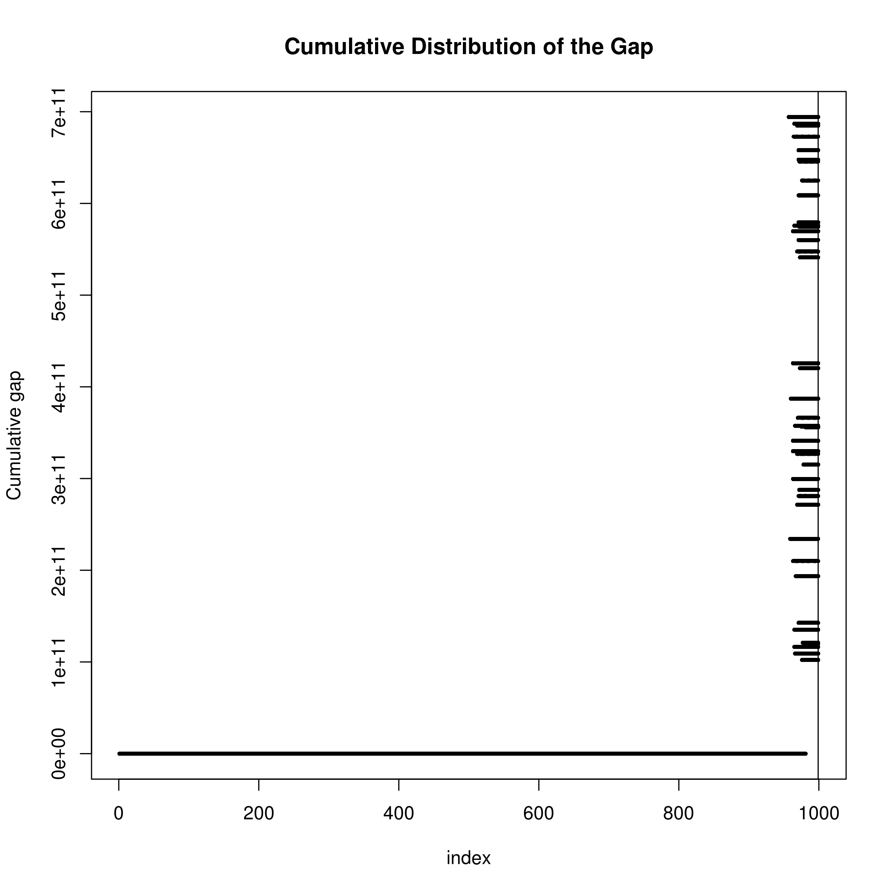

Understanding How Genetics and Environments Shape the Development of Schizophrenia
A thesis submitted in partial fulfillment of the requirements for
the Degree of Doctor of Philosophy
Department of Psychiatry
University of Hong Kong
Hong Kong
is a detrimental disorder affecting approximately 1% of the population worldwide. To fully understand the disease mechanism for the development of proper treatments, it is important not only to examine how certain genetic polymorphisms can predispose individuals to the disease development, but also how environmental factors triggers the disorder in apparently healthy individuals.
is now a standard approach for investigating associations of common genetic variations (mainly the ) with . A recent meta-analysis of of has identified 108 loci significantly associated with . However, due to the limitation of sample size and the moderate-to-small effect size of an unknown number of causal loci, many associated with may be left undetected and a much larger sample size of may be required. However, it is also possible that these 108 loci have already contained all or near most of the associated with the disease. So estimating the contribution of these common to (and other complex diseases) has important implications for future research strategy.
In this thesis, we proposed an alternative approach for estimating the contribution of to (-heritability) from summary statistics, called the . Our simulation results suggested that when compared to the existing method (), provided a more robust estimate for oligogentic traits and in case-control designs in which no confounding variables was present. Using the summary statistics from the latest meta-analysis of of , we estimated that has a -heritability of 0.174 (SD=0.00453), which is similar to the estimate of 0.197 (SD=0.0058) by our competitor . The result indicated that common have relatively less contribution to the genetic predisposition of individuals to as measured by the heritability estimated. Also, it suggested that alternative strategies like whole genome sequencing would be more efficient for identifying additional genes, compared to .
On the other hand, prenatal infection has been identified as the single largest environmental risk factor of . It was estimated that prenatal infection may account for one-third of the cases of and a wide variety of infections are associated with the increased risk in the offspring. This suggests that during prenatal development may have a negative impact on fetal brain functions as well as behaviors. So it is important to understand how triggers the disorder by examining the molecular events that take place in the cerebellum using established animal models, such as those involving the viral RNA mimic .
As a result, we also performed a RNA-sequencing study for the on the change in global gene expressions in the fetal cerebellum in -treated pregnant mice. We found that several pathways related to neural functioning and calcium ion signaling were likely to be disrupted by in the cerebellum. In addition, we investigated how a n-3 rich diet can help to reduce the -like phenotype in mice exposed to early insults. We found that Sgk1, a gene that regulates the glutamatergic system, is potentially affected by the n-3 rich diet in the exposed mice. In conclusion, our results suggested that genes related to neural function or calcium ion signaling, as well as glutamate-related genes such as Sgk1, are potential targets for future research.
(550 words)
I declare that this thesis represents my own work, except where due acknowledgments is made, and that it has not been previously included in a thesis, dissertation or report submitted to this University or to any other institution for a degree, diploma or other qualification.
Signed....................................................................
Choi Shing Wan
I would like to express my deepest gratitude to Professor Pak Sham. I am eternally grateful for his trust, supervision, patience and support in the course of my study. I would also like to thanks Dr Stacey Cherny and Dr Wanling Yeung for giving me valuable advice for my projects. My special thanks go to Dr Johnny Kwan. He has provided critical advices on my projects and has taught me a great deal in the field of statistic.
The past 4 years has been a blast and I really enjoy my time in this department. This is only possible because of all the great people here. Thank you Beatrice Wu, Dr Li Qi, Tomy Hui, Vicki Lin, Nick Lin, John Wong, Dr Clara Tang, Dr Amy Butler, Dr Emily Wong, Dr Allen Gui, Dr Sylvia Lam, Yung Tse Choi, Oi Chi Chan, Pui King Wong and Dr Miaoxin Li, without you everything will be much different. I will forever cherish the time I spent with you.
Words alone cannot express my gratitude to Beatrice Wu and my family. Their support and encouragement have been my greatest source of energy and have helped me to continue on with my study.
THANK YOU!
is a devastating psychiatric disorder affecting approximately \(0.3\sim0.7\%\) of the population worldwide \citep{AmericanPsychiatricAssociation2013}. According to the -, which is one of the standard diagnostic tools, a diagnosis of scz (F20.9) can only be reached if the patient suffered from 2 or more of the following symptoms for a significant portion of time during a 1-month period:
[label=)]
delusion; [ls:delusion]
hallucinations;[ls:hallucinations]
disorganized speech;[ls:disorganizedSpeech]
grossly disorganized or catatonic behaviour; and[ls:catatonicBehavior]
negative symptoms such as diminished emotional expression,[ls:negativeSymptoms]
where one of the symptom must be either ([ls:delusion], ([ls:hallucinations] or ([ls:disorganizedSpeech]. Signs of disturbance also need to persist for at least 6-month before the patient can be diagnosed with scz.
Due to detrimental symptoms and the lack of effective treatments, scz imposes a long lasting health, social and financial burden to the patients and their families \citep{Knapp2004}. scz patient also have a higher tendency to commit suicide \citep{Saha2007}, leading to a higher mortality, based on the report, scz is one of the top 20 leading cause of in 2012, ranking 16 among all possible causes ([tab:whoYLD]), demonstrating the extent of impact from scz to patients.
rp5cmrrr Rank & Cause & (000s) & % &
| per |
| 100k population |
0 & All Causes & 740,545 & 100 & 10466
1 & Unipolar depressive disorders & 76,419 & 10.3 & 1080
2 & Back and neck pain & 53,855 & 7.3 & 761
3 & Iron-deficiency anaemia & 43,615 & 5.9 & 616
4 & Chronic obstructive pulmonary disease & 30,749 & 4.2 & 435
5 & Alcohol use disorders & 27,905 & 3.8 & 394
6 & Anxiety disorders & 27,549 & 3.7 & 389
7 & Diabetes mellitus & 22,492 & 3 & 318
8 & Other hearing loss & 22,076 & 3 & 312
9 & Falls & 20,409 & 2.8 & 288
10 & Migraine & 18,538 & 2.5 & 262
11 & Osteoarthritis & 18,096 & 2.4 & 256
12 & Skin diseases & 15,744 & 2.1 & 223
13 & Asthma & 14,134 & 1.9 & 200
14 & Road injury & 13,902 & 1.9 & 196
15 & Refractive errors & 13,498 & 1.8 & 191
16 & Schizophrenia & 13,408 & 1.8 & 189
17 & Bipolar disorder & 13,271 & 1.8 & 188
18 & Drug use disorders & 10,620 & 1.4 & 150
19 & Endocrine, blood, immune disorders & 10,495 & 1.4 & 148
20 & Gynecological diseases & 10,227 & 1.4 & 145
[tab:whoYLD]
Due to the severity of scz, it has drawn much attention from the research community, hoping to delineate the disease mechanics and to identify risk factors associate with scz. Ultimately, the goal of scz research is to identify effective treatment(s) to improve the quality of life of the patients.
An important first step in scz research is to understand whether if variation in genetic or environment contribute more to the disease etiology. In order to study the relative contribution of genetic and environmental influence to individual differences in scz, one will need to calculate the heritability of scz. There are two definition of heritability: the broad sense heritability and the narrow sense heritability. The broad sense heritability is defined as the proportion of total variance of a trait in a population explained by the total variation of genetic factors in the population whereas the narrow sense heritability only take into account of the variation of additive genetic factors in the population instead of the total variation of genetic factors.
First, we need to understand the broad sense heritability.
For any phenotype, one can partition it into a combination of genetic and environmental components \citep{Falconer1996} \[\text{Phenotype (P)}=\text{Genotype (G)}+\text{Environment (E)}\] where the variance of the observed phenotype (\(\sigma_P^2\)) can be expressed as variance of genotype (\(\sigma_G^2\)) and variance of environment (\(\sigma_E^2\)) \[\sigma_P^2=\sigma_G^2+\sigma_E^2\] The ratio between the variance of the observed phenotype and the variance of the genetic effects is then defined as the broad sense heritability: \[H^2=\frac{\sigma_G^2}{\sigma_P^2}\]
One key feature of heritability is that it is a ratio of population measurement at a specific time point. As a result of that, the heritability estimation might differ from one population to another due to difference in . One might also obtain a different heritability estimate if the method or the time of measurement of the trait differs as a result of different environmental factors coming into play. A classic example is where its heritability increases with age \citep{Bouchard2013}. It was hypothesize that the shared environment has a larger effect on individuals when they were young, and as they become more independent, the effect of shared environment diminishes, leading to an increased portion of variance in explained by the variance in genetic \citep{Bouchard2013}.
The problem of heritability gets more complicated when we take into account of different forms of genetic effects and this is when we consider the narrow sense heritability.
There are different forms of genetic effects including and therefore one can partition the genetic variance into variance of additive genetic effects (\(\sigma_A^2\)), variance of dominant genetic effects (\(\sigma_D^2\)) and other epistatic genetic effects (\(\sigma_I^2\)) such that \[\sigma_G^2=\sigma_A^2+\sigma_D^2+\sigma_I^2\] where additive genetic variance is the variance explained by the average effects of all loci involved in the determination of the trait, whereas dominant genetic effects and epistatic genetic effects are the interaction between alleles at the same locus or different loci respectively.
As individuals only transmit one copy of each allele to their offspring, relatives other than full siblings and identical twins will only share a maximum of one copy of the allele. Considering that dominance and non-additive genetic effects are the interactive effect, which usually involve more than one copy of the alleles, these effects are unlikely to contribute to the resemblance between relatives \citep{Visscher2008}. On the other hand, the additive genetic effects are usually transmitted from parent to offspring, thus it is more useful to consider the narrow sense heritability (\(h^2\)) which only consider the additive genetic effects:
\[\begin{aligned} h^2&=\frac{\sigma_A^2}{\sigma_P^2} \notag\\ h^2&=\frac{\sigma_A^2}{\sigma_G^2+\sigma_E^2} \label{eq:narrowHeritability} \end{aligned}\]
To obtain the additive genetic effect, we can first consider the genetic effect of a parent to be \(G_p=A+D\). As only half of the additive effect were transmitted to their offspring, the child will have a genetic effect of \(G_c=\frac{1}{2}A+\frac{1}{2}A'+D'\) where \(A'\) is the additive genetic effect obtained from another parent by random and \(D'\) is the non-additive genetic effect in the offspring. If we then consider the parent offspring covariance, we will get \[\begin{aligned} \mathrm{Cov_{OP}}&= \sum(\frac{1}{2}A+\frac{1}{2}A'+D')(A+D)\notag\\ &=\frac{1}{2}\sum A^2+\frac{1}{2}\sum AD + \frac{1}{2}\sum A'(A+D) +D'(A+D) \notag\\ &=\frac{1}{2}V_A+ \frac{1}{2}\mathrm{Cov}_{AD} + \frac{1}{2}\mathrm{Cov}_{A'A} + \frac{1}{2}\mathrm{Cov}_{A'D} +\mathrm{Cov}_{D'A} +\mathrm{Cov}_{D'D} \label{eq:halfCompletedCovOP} \end{aligned}\] Under the assumption of random mating, \(A'\) should be independent from \(A\) and \(D\). Moreover, as \(D'\) was specific to the child, it should be independent from \(A\) and \(D\), with the covariance between the additive genetics and non-additive genetics being zero \citep{Falconer1996}. Thus, [eq:halfCompletedCovOP] becomes \[\begin{aligned} \mathrm{Cov_{OP}} &= \frac{1}{2}V_A+\mathrm{Cov}_{AD} \notag\\ &= \frac{1}{2}V_A \label{eq:covOP} \end{aligned}\] Now if we assume the variance of phenotype of the parent and offspring were the same, then using [eq:covOP], we can obtain the narrow-sense heritability as \[\begin{aligned} h^2 &= \frac{1}{2}\frac{V_A}{\sigma_P^2} \label{eq:narrowHerit} \end{aligned}\]
In the simple linear regression equation \(Y=X\beta+\epsilon\), the regression slope can be calculated as \[\beta_{XY} = \frac{\mathrm{Cov}_{XY}}{\sigma_{X}{Y}}\] which resemble [eq:narrowHerit]. Therefore, we can calculate the narrow sense heritability as \[h^2 = 2\beta_{OP} \label{eq:narrowSenseHerit}\] where \(\beta_{OP}\) is the slope of the simple linear regression regressing the phenotype of an offspring to the phenotype of one of its parents. We can further generalize [eq:narrowSenseHerit] to all possible relativeness \[h^2=\frac{\beta_{XY}}{r} \label{eq:finalNarrow}\] where \(r\) is the relativeness of \(X\) and \(Y\).
A key assumption in this calculation is that only additive genetic factors are shared among relatives. However, this is not completely true as relatives does tends to be in the same cultural group and might have similar socio-economic status. These might all contribute to the variance of the trait, thus lead to bias in [eq:finalNarrow] and we shall discuss the partitioning of variance in the later sections.
Nonetheless, [eq:finalNarrow] provide a simple example to the calculation of the narrow sense heritability. However, in the case of discontinuous trait (e.g. disease status) the calculation becomes more complicated because the variance of the phenotype was dependent on the population prevalence. As [eq:finalNarrow] does not account for the trait prevalence, it cannot be directly applied to discontinuous traits. In order to perform heritability estimation on discontinuous trait, the concept of liability threshold model proposed by \cite{Falconer1965} is necessary with the calculation.
According to the central limit theorem, if a phenotype is determined by a multitude of genetics and environmental factors with relatively small effect, then its distribution will likely follow a normal distribution as is the case of many quantitative traits \citep{Visscher2008}. The variance of phenotype can therefore be calculated as the variance under the normal distribution. However, such is not the case for disease like scz where only a dichotomous disease status (“affected” and “normal”) are obtained. The variance of these phenotypes are therefore more difficult to obtain.
\citet{Falconer1965} proposed the liability threshold model, which suggests that these discontinuous traits also follow a continuous distribution with an additional parameter called the “liability threshold”. Under the liability threshold model, the discontinuous traits are assumed to be affected by combination of multitude of genetics and environmental factors, each with small effects. The main difference is that the phenotype of an individual is determined by whether if the combined effects of these factors (“liability”) are above a particular threshold (“liability threshold”) ([fig:liability]), e.g. only when an individual has a liability above the liability threshold will he/she be affected.
The liability threshold model. Only when an individual has a liability above the liability threshold will he/she be affected.
One can then estimate the heritability of the discontinuous trait by comparing the mean liability of the general population when compared to the relatives of the affected individuals. For example, if we consider a single threshold model of a dichotomous trait, where \[\begin{aligned} T_G &= \text{Liability threshold of the general population}\notag\\ T_R &= \text{Liability threshold of relatives of the index case} \notag\\ q_G &= \text{Prevalence in the general population}\notag\\ q_R &= \text{Prevalence in relatives of the index case}\notag\\ L_a &= \text{Mean Liability of the index case} \notag \end{aligned}\] by assuming both the liability distribution of the general population and the relative of the index case both follows the standard normal distribution, we can align the two distributions with respect to \(T_G\) and \(T_R\). We can then calculate the mean liability of the index case \(L_a\) as \(L_a=\frac{z_G}{q_G}\) where \(z_G\) is the density of the normal distribution at the liability threshold \(T_G\). Then we can express the regression of relatives’ liability on the liability of the index case as \[\begin{aligned} \beta &= \frac{T_G-T_R}{L_a} \label{eq:liability} \end{aligned}\]
Thus, by applying [eq:liability] to [eq:finalNarrow], we get \[\begin{aligned} h^2 =\frac{T_G-T_R}{rL_a} \end{aligned}\]
One key limitation of [eq:finalNarrow] is its inability to discriminate the genetic factors from the shared environmental factors. Such problem arises as family not only share some of their alleles, but they also tends to share some of the environmental factors such as diet and socio-economic status. In fact, this was the main reason for researchers to discord the argument that scz is a genetic disorder.
A classical adoption study carried out by \citet{HESTON1966} in 1966 investigated whether if the increased risk of scz in relatives of scz was caused by the shared environmental factors or the shared genetic factors. An advantage of adoption studies is that if the child was separated from their family early after birth, then the shared environmental factors should be minimized, thus any resemblance between the parent and child should be driven mainly by the shared genetic factors. \citet{HESTON1966} collected data of 47 individuals who were born to schizophrenic mothers during the period from 1915 to 1947. They were separated from their mother within three days of birth and sent to a foster family. 50 matched controls were also recruited in this study. It was observed that there was an increased risk of scz in individuals born to schizophrenic mothers when compared to the control groups even-though they were brought up in a different environment as that of their mother. This result suggested that scz is likely driven by the shared genetic factors instead of the shared environmental factors.
Despite the usefulness of adoption studies in delineating the effect of shared environment from the genetic factors, collection of adoption data are extremely difficult. Moreover, any prenatal influence such as alcohol abuse and malnutrition during pregnancy might confound the results. Therefore, an alternative method would be the twin studies which utilize the relationship between the and twins.
Theoretically, twins share all their genetic components (both additive (\(A\)) and non-additive (\(D\)) genetic factors) and also their common environmental factors (\(C\)) where the only difference between a twin pair is the non-shared environmental factors (\(E\)). As for the twins, they also share the same common environmental factors yet they only share \(\frac{1}{2}\) of their additive genetic factors and \(\frac{1}{4}\) of their non-additive genetic factors. The non-shared environment is also, by definition, not shared among the twins \citep{Rijsdijk2002}. Based on these assumptions, \cite{Falconer1996} derived the heritability as \[h^2 = 2(\rho_{MZ}-\rho_{DZ})\] where \(\rho_{MZ}\) and \(\rho_{DZ}\) are the phenotype correlation between the twins and twins respectively.
By combining Falconer’s formula and the concept of liability threshold model, \citet{Gottesman01071967} estimated that the heritability of scz to be \(>60\%\) based on previously collected twin data, provide strong evidence that the genetic variation contributes more to the variance of scz. The result was further supported by one of the landmark meta-analysis study conducted by \citet{Sullivan2003}. Based on data obtained from 12 published scz twin studies, \citet{Sullivan2003} found that although there is a non-zero contribution of environmental influence on liability of scz (\(11\%\), =\(3\%-19\%\)), there is a much larger contribution from genetics (\(81\%\), =\(73\%-90\%\)), further supporting that scz is largely mediated by the genetic factors.
Such findings are not only limited to twin-studies but were also reported in large scale population based studies. A recent large scale population based study in Sweden population \citep{Lichtenstein2009} also found that there is a large genetic contribution in scz (\(64\%\)). Although the estimated heritability (64% \citep{Lichtenstein2009} vs 81% \citep{Sullivan2003}) differs between the two studies, there is no doubt that scz is highly heritable.
Although population-based, adoption and twin studies suggest that scz is highly heritable, little was known about the disease mechanism of scz nor the genetic architecture of the disorder. All data from adoption studies, twin studies and family studies shown that scz does not follow the Mendelian framework \citep{Gottesman01071967,Gottesman1982}. Specifically, shall scz be a Mendelian disorder, then we would expect all siblings of the proband to also suffer from scz. However, the life time morbid risk of monozyogitc twins were only \(48\%\) ([fig:lifeMRscz]) \citep{gottesman1991schizophrenia}, making it unlikely for scz to follow a Mendelian pattern.
Lifetime morbid risks of scz in various classes of relatives of a proband. It was noted that the morbid risk of monozygotic (MZ) twins were only \(48\%\), much lower than one would expect if scz follows a Mendelian pattern. Reproduced with permission from journal \citep{Riley2006}. [fig:lifeMRscz]
Based on these observations, \citet{Gottesman1967} proposed that scz follows a polygenic model where disease phenotype were determined by the additive effects from multiple genes. Thus, scz is likely to be a complex genetic disorder with complicated pattern of inheritance.
By comparing the observed life time morbid risk and the expected risk from different models, \citet{Risch1990} proposed that the cause variants of scz are more likely to have a risk less than 2 with no loci with risk larger than 3, suggesting a relatively small effect size. Very large samples are therefore required to detect these susceptibility loci through linkage studies \citep{Risch1990}.
This might explain the early inconsistent findings of linkage studies in scz \citep{Harrison2005}. As linkage studies were aimed to identify genetic variation of large effect size and usually have a relatively small sample size, it lacks detection power to identify the susceptibility loci with small effect size. The early failure of linkage studies in scz were disappointing and not until the initiation of Human Genome Project, and technological advance resulted from that does genetic research of scz began to enter an era of success.
In 1990, the Human genome project was initiated, aiming at constructing the first physical map of the human genome at per nucleotide resolution \citep{Lander2001}. The completion of the human genome project has opened up a new era of genetic research, allowing researchers to identify , which is one of the major source of genetic variation in the human genome.
Soon after the completion of the human genome project, the HapMap Project was initiated \citep{Consortium2005}, aiming to provide a genome-wide database of common human sequence variation such as with \(\ge0.05\).
More importantly, the HapMap Project provided a detailed map of the human genome. is of particular importance to genetic research for it is the non-random correlation of genotypes between 2 genetic loci. in high are usually observed together in the human genome. When a large amount of are in high together, they form what is known as a block. By performing association testing on representing a block (“tagging”), one can avoid the need of performing association on the whole genome, therefore reducing the cost of the experiment. This was the fundamental concept of which is now extensively used in the genetic research.
In , genome-wide genotyping array are commonly used to systematically detect common genetic variants such as and in genome-wide scale. For quantitative traits, the association between the trait and frequency of the variants are calculated using methods such as linear regression. On the other hand, for dichotomous traits such as scz, the frequency of the variants are compared between the case and control samples using methods such as chi-square test or logistic regression. Because of the problem of multiple testing, only variants with a p-value passing a genome wide threshold (p-value \(\le5\times10^{-8}\)) are considered to be significant in . Another possible method to decide the significant threshold is to consider the “effective number” of tests \citep{Li2011}, which reduced the genome-wide threshold according to the structure. When designing a , one need to take into account of the magnitude of effect, sample size, and required level of statistical significance (the false-positive, or type I, error rate) in order to have a powerful study \citep{Purcell2003}.
Despite the great promise from , early in scz remain largely disappointing and were unable to identify any robust genetic markers associated with scz. The failure of early in scz were mainly due to the relative small sample size of the studies, which result in low statistical power.
To overcome the problem of small sample size, large consortium were formed such that genetic data from different research groups from different countries were combined and analyzed. By 2014, the scz Working group of the has conducted a multi-stage scz of up to 36,989 scz samples and 113,075 controls. In their study \citep{Ripke2014}, 128 linkage-disequilibrium-independent were found to exceeded the genome-wide significance (p-value \(\le 5\times10^{-8}\)), corresponding to 108 independent genetic loci. 75% of these loci contain protein coding genes and a further 8% of these loci were within 20 of a gene. It was found that genes involved in glutamatergic neurotransmission (e.g. GRM3, GRIN2A and GRIA1), synaptic plasticity and genes encoding the voltage-gated calcium channel subunits (e.g. CACNA1C, CACNB2 and CACNA1I) were among the genes associated within these loci. Moreover, DRD2, the target of all effective anti-psychotic drug were also found to be associated with scz. This result converges with existing knowledge of DRD2 being involved in the pathology of scz, supported by multiple lines of research \citep{Talkowski2007}.
[fig:pgcEnrich]
It was further demonstrated that scz association were significantly enriched at enhancers active in brain and enriched at enhancers active in tissues with important immune functions ([fig:pgcEnrich])\citep{Ripke2014}.
Additionally, the enrichment of immune related enhancers remains significant even after the removal of region from the analysis, providing further genetic support of the involvement of the immune system in the etiology of scz. Because of its role in neural development \citep{Zhao1998,Deverman2009}, it is likely that the perturbation in the immune system might disrupt the brain development, therefore increasing the risk of scz. Although the scz is very successful, it is uncertain whether if all common variants associated with scz has been captured. With the unknown number of causal loci with moderate-to-small effect size, many associated with scz may be left undetected given the current sample size. However, it is also possible that the scz has already captured all or near most of the associated with the disease. Therefore, estimating the contribution of these common to scz has important implications for future research strategy.
In a typical , a stringent genome wide significant threshold were usually employed to avoid false positive findings. However, if individual have a small effect on the trait, the real association might be missed. Therefore, to estimate the true contribution of common to a disease (-heritability), one should try to consider all in the estimation.
Currently, the most popular algorithm for the estimation of -heritability is , which uses information from the \citep{Yang2011}. The represents the “genetic distance” between all individuals within the . Genetic relationship between individual \(j\) and \(k\) is estimated as \[A_{jk} = \frac{1}{N}\sum^N_{i=1}\frac{(x_{ij}-2p_i)(x_{ik}-2p_i)}{2p_i(1-p_i)}\] where \(x_{ij}\) is the number of copies of the reference allele for the \(i^{th}\) of the \(j^{th}\) individual and \(p_i\) is the frequency of the reference allele. This is based on the fact that genotypes are usually code as 0, 1 or 2 (homozygous reference, heterozygous and homozygous alternative respectively) and should follow the binomial distribution where the expected mean and variance of the genotype \(i\) will be \(2p_i\) and \(2p_i(1-p_i)\) respectively. Thus \(A_{jk} = \frac{1}{N}\sum^N_{i=1}z_{ij}z_{ik}\) where \(z_{ij}\) is the standardized genotype for the \(i^{th}\) of the \(j^{th}\) individual.
Using the information from the , \citet{Yang2011} then fit the effects of all the as random effects by a \[\begin{aligned} \boldsymbol{y} &= \boldsymbol{X\beta}+\boldsymbol{g}+\epsilon\\ \mathrm{Var}(\boldsymbol{y}) &= \boldsymbol{A}\sigma_g^2+\boldsymbol{I}\sigma_\epsilon^2 \end{aligned}\] where \(\boldsymbol{y}\) is an \(n\times 1\) vector of phenotypes with \(n\) samples, \(\boldsymbol{\beta}\) is a vector of fixed effects such as sex and age, \(\boldsymbol{g}\) is an \(n\times 1\) vector of the total genetic effects of the individuals, \(\sigma_g^2\) is the variance explained by all the and finally, \(\sigma_\epsilon^2\) is the variance explained by residual effects.
The main concept of is that instead of testing the associations for individual , one fit the effects of all as random effects in a and estimate a single parameter, i.e. the variance explained by all or -heritability. Given the information of the , \citet{Yang2011} implemented the using the average information algorithm to estimate the \(\sigma_g^2\) and \(\sigma_\epsilon^2\) where the is a form of maximum likelihood estimation that allows unbiased estimates of variance and covariance parameters. The -heritability of the trait is then defined as \(\frac{\sigma_g^2}{\sigma_g^2+\sigma_e^2}\).
Based on the above concept, \citet{Yang2010a} were able to estimate the variance in height explained by from the height to be around 45%, much larger than previously reported 5%. The main difference in the estimates was because the were able to consider all simultaneously without thresholding the significant . Although the estimates was still less than 80% which is the expected heritability of height, \citet{Yang2010a} was able to demonstrated that one possible source of “missing heritability” might be due to incomplete . By taking into consideration of incomplete , it was estimated that the proportion of variance explained by causal variants can be as high as 0.84 with of 0.16 \citep{Yang2010a}, close to the expected heritability. Together, \citet{Yang2011} provide a possible method for the estimation of the variance explained by in data and the method is now implemented in which is wildly adopted.
One limitation of is that genotype data are required to calculate the . For complex disease like scz, the data were usually obtained from multiple data source where the raw genotypes are unavailable. Instead, summary statistics are usually provided. Therefore estimation of variance explained by in these can only rely on the summary statistics.
In large scale studies, a general inflation of summary statistics can sometimes be observed. It was usually considered to be contributed by the presence of confounding factors such as population stratification, under the assumption that most of the should have no association to the disease. It was therefore a common practice for one to perform the on the results \citep{Zheng2006}.
The problem of was that the basic assumption of a small number of causal might not be true, especially in complex disease like scz. Through careful simulation, \citet{Yang2011b} demonstrated that in the absence of population stratification and other form of technical artifacts, the presence of polygenic inheritance can inflate the summary statistic \citep{Yang2011b}. More importantly, they observed that the magnitude of inflation was determined by the heritability, the structure, sample size and the number of causal of the trait.
The observation of \citet{Yang2011b} provide important foundation for the estimation of heritability based on summary statistics where a possible method will be to elucidate the heritability based on the magnitude of inflation of the summary statistics. However, when confounding factors such as population stratification and cryptic relatedness are presented, they can also inflate the summary statistics. Therefore, in order to estimate the -heritability, one must delineate the confounding factors from the polygenicity of the trait.
Based on the work of \citet{Yang2011b}, \citet{Bulik-Sullivan2015} hypothesized that strength of “tagging” of a should be correlated with the probability of it to “tag” the causal and should be independent to confounding factors such as population stratification and cryptic relatedness. \citet{Bulik-Sullivan2015} then defined the strength of “tagging” of a as the score, which is the sum of \(r^2\) of \(k\) within a 1 window of \(_j\): \[l_j = \sum_kr^2_{jk} \label{eq:ldScore}\]
Based on their hypothesis, the expected \(\chi^2\) of association of \(_j\) with the trait can be defined as a function of the score (\(l_j\)), the number of samples (\(N\)), the number of in the analysis(\(M\)) and most importantly, the heritability (\(h^2\)): \[\mathrm{E}[\chi^2_j | l_j] = \frac{Nh^2}{M}l_j+1 \label{eq:fixedLDSC}\]
When confounding factors presents in the study (e.g. population stratification), [eq:fixedLDSC] can instead be defined as \[\mathrm{E}[\chi^2_j | l_j] = \frac{Nh^2}{M}l_j+Na+1 \label{eq:fullLDSC}\] where \(a\) is the contribution of confounding bias.
By considering [eq:fullLDSC] as a regression model, \citet{Bulik-Sullivan2015} observed that the contribution of common variants (the heritability \(h^2\)) will be the slope of the regression and the intercept minus one will represent the mean contribution of the confounding bias such as those of population stratification. The was implemented by \citet{Bulik-Sullivan2015}, using [eq:fullLDSC] to delineate the contribution from confounding factors and common genetic variants.
To test their hypothesis, \citet{Bulik-Sullivan2015} simulated multiple where the trait can have a polygenic architecture or where confounding factors can present. When the simulated trait is polygenic and no confounding factors were presented, the average intercept was close to one and the estimates were unbiased in all situation. Only when the number of causal variants was small will the standard error of the estimates become very large. On the other hand, when the was simulated with only the confounding factors such as population stratification, the intercept estimated was approximately equal to the inflation factor with only a small positive bias in the regression slope.
Moreover, when a polygenic trait was simulated with confounding factors, the intercept of was approximately equal to the mean \(\chi^2\) statistic among the null , providing strong evidence that can partition the inflation in test statistic even in the presence of both bias and polygenicity.
Given the success of the simulation, \citet{Bulik-Sullivan2015} estimated the heritability of scz using the summary statistics from the scz \citep{Ripke2014} to be 0.555 with of 0.008 after adjusting for ascertainment bias. The estimated heritability was lower than the heritability estimated from population based study (64% \citep{Lichtenstein2009}) and twin studies (81% \citep{Sullivan2003}) suggesting that it is possible for variants other than common also account for variations in scz.
Another implication of is that it allows the partitioning of heritability, which helps to identify pathways that are associated with a trait.
Traditionally, functional enrichment analysis in only take into account of that passed the genome wide significance threshold. However, for complex traits such as scz, much of the heritability might lies in that do not reach genome wide significance threshold at the current sample size. For example, in 2013, only 13 risk loci were detected using 13,833 scz samples and 18,310 controls \citep{Ripke2013}. When the sample size increased to 34,241 scz samples and 45,604 controls in 2014, 108 risk loci were identified \citep{Ripke2014}. Thus, if one only consider the significant loci, risk loci that have not reach genome wide significance threshold might be ignored from the analysis, decreasing the power of the functional enrichment analysis.
In order to estimate whether if a functional categories is associated with the trait, takes into consideration of the summary statistic of all the including in the . The partitioning of the heritability is then calculated as \[\mathrm{E}[\chi^2_j] = N\sum_C\tau_Cl(j,C)+Na+1 \label{eq:partitionH}\]
The main difference between [eq:partitionH] and [eq:fullLDSC] is that \(\frac{h^2}{M}l_j\) is substituted by \(\sum_C\tau_Cl(j,C)\) where \(l(j,C)\) is the Score of \(j\) with respect to category \(C\) and \(\tau C\) is the per- heritability in category \(C\).
Using data from \citet{Ripke2014} and functional categories derived from the ENCODE annotation \citep{ENCODEProjectConsortium2012}, the NIH Roadmap Epigenomics Mapping Consortium annotation \citep{Bernstein2010} and other studies, \citet{Finucane2015} attempted to identify functional categories that were most enriched in scz. In their study, it was found that brain cell types and immune related cell types were most enriched in scz. Among the functional categories, the most enriched category in scz was the H3K4me3 mark in the fetal brain([tab:cellTypeScz]). As H3K4me3 is mostly linked to active promoters, this suggests that genes that are activated in fetal brain (e.g. genes related to brain development) are associated with scz, supporting the idea of scz as a neuro-developmental disorder. Undoubtedly, the and the immune system have an important role in the disease etiology of scz.
p6cmrrr Cell type & cell-type group & Mark & P-value
Fetal brain** & CNS & H3K4me3 & \(3.09\times 10^{-19}\)
Mid frontal lobe** & CNS & H3K4me3 & \(3.63\times 10^{-15}\)
Germinal matrix** & CNS & H3K4me3 & \(2.09\times 10^{-13}\)
Mid frontal lobe** & CNS & H3K9ac & \(5.37\times 10^{-12}\)
Angular gyrus** & CNS & H3K4me3 & \(1.29\times 10^{-11}\)
Inferior temporal lobe** & CNS & H3K4me3 & \(1.70\times 10^{-11}\)
Cingulate gyrus** & CNS & H3K9ac & \(5.37\times 10^{-11}\)
Fetal brain** & CNS & H3K9ac & \(5.75\times 10^{-11}\)
Anterior caudate** & CNS & H3K4me3 & \(2.19\times 10^{-10}\)
Cingulate gyrus** & CNS & H3K4me3 & \(4.57\times 10^{-10}\)
Pancreatic islets** & Adrenal/Pancreas & H3K4me3 & \(2.24\times 10^{-09}\)
Anterior caudate** & CNS & H3K9ac & \(3.16\times 10^{-9}\)
Angular gyrus** & CNS & H3K9ac & \(4.68\times 10^{-9}\)
Mid frontal lobe** & CNS & H3K27ac & \(7.94\times 10^{-9}\)
Anterior caudate** & CNS & H3K4me1 & \(1.20\times 10^{-8}\)
Inferior temporal lobe** & CNS & H3K4me1 & \(3.72\times 10^{-8}\)
Psoas muscle** & Skeletal Muscle & H3K4me3 & \(4.17\times 10^{-8}\)
Fetal brain** & CNS & H3K4me1 & \(6.17\times 10^{-8}\)
Inferior temporal lobe** & CNS & H3K9ac & \(9.33\times 10^{-8}\)
Hippocampus middle** & CNS & H3K9ac & \(9.33\times 10^{-7}\)
Pancreatic islets** & Adrenal/Pancreas & H3K9ac & \(1.62\times 10^{-6}\)
Penis foreskin melanocyte primary** & Other & H3K4me3 & \(2.09\times 10^{-6}\)
Angular gyrus** & CNS & H3K27ac & \(2.34\times 10^{-6}\)
Cingulate gyrus** & CNS & H3K4me1 & \(2.82\times 10^{-6}\)
Hippocampus middle** & CNS & H3K4me3 & \(2.82\times 10^{-6}\)
CD34 primary** & Immune & H3K4me3 & \(4.68\times 10^{-6}\)
Sigmoid colon** & GI & H3K4me3 & \(5.01\times 10^{-6}\)
Fetal adrenal** & Adrenal/Pancreas & H3K4me3 & \(6.31\times 10^{-6}\)
Inferior temporal lobe** & CNS & H3K27ac & \(8.32\times 10^{-6}\)
Peripheralblood mononuclear primary** & Immune & H3K4me3 & \(9.33\times 10^{-6}\)
Gastric** & GI & H3K4me3 & \(1.17\times 10^{-5}\)
Substantia nigra* & CNS & H3K4me3 & \(1.95\times 10^{-5}\)
Fetal brain* & CNS & H3K4me3 & \(2.63\times 10^{-5}\)
Hippocampus middle* & CNS & H3K4me1 & \(3.31\times 10^{-5}\)
Ovary* & Other & H3K4me3 & \(6.46\times 10^{-5}\)
CD19 primary (UW)* & Immune & H3K4me3 & \(7.08\times 10^{-5}\)
Small intestine* & GI & H3K4me3 & \(8.51\times 10^{-5}\)
Lung* & Cardiovascular & H3K4me3 & \(1.17\times 10^{-4}\)
Fetal stomach* & GI & H3K4me3 & \(1.29\times 10^{-4}\)
Fetal leg muscle* & Skeletal Muscle & H3K4me3 & \(1.51\times 10^{-4}\)
Spleen* & Immune & H3K4me3 & \(1.70\times 10^{-4}\)
Breast fibroblast primary* & Connective/Bone & H3K4me3 & \(2.04\times 10^{-4}\)
Right ventricle* & Cardiovascular & H3K4me3 & \(2.14\times 10^{-4}\)
CD4+ CD25- Th primary* & Immune & H3K4me3 & \(2.19\times 10^{-4}\)
CD4+ CD25- IL17- PMA Ionomycin stim MACS Th sprimary* & Immune & H3K4me1 & \(2.19\times 10^{-4}\)
CD8 naive primary (UCSF-UBC)* & Immune & H3K4me3 & \(2.24\times 10^{-4}\)
Pancreas* & Adrenal/Pancreas & H3K4me3 & \(2.34\times 10^{-4}\)
CD4+ CD25- Th primary* & Immune & H3K4me1 & \(2.75\times 10^{-4}\)
CD4+ CD25- CD45RA+ naive primary* & Immune & H3K4me1 & \(2.75\times 10^{-4}\)
Colonic mucosa* & GI & H3K4me3 & \(3.24\times 10^{-4}\)
Right atrium* & Cardiovascular & H3K4me3 & \(3.31\times 10^{-4}\)
Fetal trunk muscle* & Skeletal Muscle & H3K4me3 & \(3.39\times 10^{-4}\)
CD4+ CD25int CD127+ Tmem primary* & Immune & H3K4me3 & \(3.47\times 10^{-4}\)
Substantia nigra* & CNS & H3K9ac & \(3.63\times 10^{-4}\)
Placenta amnion* & Other & H3K4me3 & \(4.17\times 10^{-4}\)
Breast myoepithelial* & Other & H3K9ac & \(5.50\times 10^{-4}\)
CD8 naive primary (BI)* & Immune & H3K4me1 & \(5.75\times 10^{-4}\)
Substantia nigra* & CNS & H3K4me1 & \(6.61\times 10^{-4}\)
Cingulate gyrus* & CNS & H3K27ac & \(7.94\times 10^{-4}\)
CD4+ CD25- CD45RA+ naive primary* & Immune & H3K4me3 & \(8.71\times 10^{-4}\)
The estimated -heritability using the common variants captured by the scz suggest that variants other than common are accounting for the variation in scz. Based on the “common disease-rare variant” hypothesis, another interesting direction of scz research will be to identify rare variants associated with scz.
A possible source of rare variants can be . are classified as segment of DNA that is 1 or larger and that is present at a different copy number when compared to the reference genome, usually in the form of insertion, deletion or duplication \citep{Feuk2006}. Due to the length of these variants, the might contain the entire genes and their regulatory regions which might in turn contribute to significant phenotypic differences \citep{Feuk2006}.
Recently, \citet{Szatkiewicz2014} conducted a for association with scz using the Swedish national sample (4,719 scz samples and 5,917 controls). In their study, they were able to identify association between scz and such as 16p11.2 duplications, 22q11.2 deletions, 3q29 deletions and 17q12 duplications. Through the gene set association analysis, calcium channel signaling and binding partners of the fragile X mental retardation protein were found to be associated with these \citep{Szatkiewicz2014}. Interestingly, the calcium channel signaling were also enriched in the on association, suggesting that the variants were converging the same set of pathways or gene sets.
Similarly, \citet{Walsh2008} also found that genes disrupted by structure variants in their cases were significantly overrepresented in pathways important for brain development, including neuregulin signaling, extracellular signal-regulated kinase/ signaling, synaptic long-term potentiation, axonal guidance signaling, integrin signaling, and glutamate receptor signaling \citep{Walsh2008}.
An important observation in these studies was that the were generally rare (\(\le12\) in 4,719 samples \citep{Szatkiewicz2014}) and has a relative large effect (e.g. odd ratio \(>2\) \citep{Szatkiewicz2014,Walsh2008}), following the “common disease-rare variant” model.
Unlike which affects a large region, rare cannot be captured using current genotyping chips. Therefore, large scale association of rare was unavailable until the development of the technology. The generates high-throughput sequencing data with per base resolution, allow one to investigate the whole human genome or the human exome without relying on “tagging”.
Using exome sequencing, \citet{Purcell2014} sequenced the exome of 2,536 scz cases and 2,543 normal controls. They were able to identify a common missense allele in CCHCR1 in the that were associated with scz. Although none of the genes showed a significant burden of rare mutation in cases, a significant increased burden of rare nonsense and disruptive variants was observed in cases in gene sets such as voltage-gated calcium ion channel, genes affected by de novo mutations in scz \citep{Fromer2014} and the postsynaptic density, all of which have been reported to be associated with scz in previous genetic studies \citep{Ripke2014}
The overlaps between the rare variant studies and the common variant studies suggest that both rare and common variants are likely to be acting upon the same pathway and are complementary to each other.
Apart from genetic variants, another possible source of “missing” heritability can come from interaction between the genetic and environmental risk factors. Although previous studies \citep{Gottesman01071967} suggested that the non-additive genetic factors were unlikely to contribute to scz, the possibility of involvement of gene-environmental interaction (\(G\times E\)) were not ruled out. Indeed, in the adoption study conducted by \citet{Tienari2004}, it was found that individuals with higher genetic risk were significantly more sensitive to “adverse” vs “healthy” rearing patterns in adoptive families than are adoptees at low genetic risk \citep{Tienari2004}. Moreover, using the national registers in Finland, \citet{Clarke2009} found that the effect of prenatal infection was five times greater in those who had a family history of psychosis when compared to those who did not. Together, these findings support a mechanism of gene-environment interaction in the causation of scz.
Many environmental factors have been associated with scz, including prenatal infection \citep{Brown2010}, winter birth \citep{OCallaghan1991}, tobacco consumption \citep{Kelly1999} and socio economic status \citep{McGrath2008a}. They are therefore potential targets for the study of \(G\times E\) interaction. However, by and large, the prenatal infection is the largest environmental risk factor of scz and existing evidence suggest that there are indeed an interaction between prenatal infection and genetic variations \citep{Clarke2009}. It is therefore interesting to investigate how prenatal infection trigger scz and how it interacts with genetic variations in the development of scz.
Risk factors of scz. It was observed that family history of scz was the largest risk factors. Risk of scz can be more than 9 times higher than the general population for individual with a family history of scz
Among all the environmental factors, prenatal infection has been considered to be an important risk factor of scz, being the single largest non-genetic risk factor of scz ([fig:riskfactors])\citep{Sullivan2005}. Initial clues indicated that births during the winter and spring months and in urban areas were related to an increased risk of the disorder \citep{Brown2010}. It was also observed that there was an increased risk of scz in individuals who were fetuses during the 1957 influenza epidemic \citep{Mednick1958}. As the chance of getting infectious disease varies by season and infectious disease can spread more quickly in urban regions due to higher population density, these evidences suggest that prenatal infection might be associated with scz.
Early studies of prenatal infection in scz mainly relies on ecological data such as influenza epidemics in the population to define the exposure status \citep{Brown2010}. The problem of these studies was that the exposure status was based solely on whether an individual was in gestation at the time of the epidemic without any confirmation of maternal infection during pregnancy, leads to difficulties in replication of the findings. Subsequently, researchers uses birth cohorts where infection was documented using different biomarkers during pregnancies to provide a better labeling of the exposure status \citep{Brown2010}. Through these rigorous studies, it was found that the risk of scz increases as long as an individual’s mother was infected by any form of infectious agents such as influenza, HSV-2 and T.gondii during gestation \citep{Brown2010}. As various infectious agents increase the risk of scz, it leads to the hypothesis that \citep{Brown2010} rather than a particular infectious agents, is the source of risk factor. It was suggested that the maternal immune response disrupt the brain development in the fetus, thus leading to an elevated risk of scz \citep{Garbett2012a}.
A great challenge in the study of is that one cannot carry out empirical experiment in human samples due to ethical concerns. Thus a popular alternative is to employ rodent models. However, unlike physiological traits, psychiatric disorder such as scz are characterized by symptoms related to higher level functioning such as hallucinations, delusion, disorganized speech etc \citep{AmericanPsychiatricAssociation2013}, these traits are not readily detectable in rodents. This raises challenge in diagnosing whether if the rodent has demonstrated the symptoms of scz for not only it was difficult to check whether if the high level functioning of the rodent is disrupted, there were no available biomarkers for scz. Therefore instead of labeling whether if the rodent is “schizophrenic” or “normal”, one would rather consider whether if the rodent demonstrate any “schizophrenia-like” behaviours such as impaired prepulse inhibition, impaired working memory and reduced social interaction \citep{Meyer2007a}. An important point to note here is that as autism and scz shares most of these behavioral abnormality, and that risk of autism is also increased by \citep{Brown2012}, studies using these rodent models were usually non-specific to scz or autism. Rather, autism and scz are usually considered together in these rodent models. However, the discussion of the etiology of autism and the similarity and difference between autism and szc is beyond the scope of the current thesis. Therefore, for the simplicity and focus of the current thesis, we will limit our discussion to scz.
A common rodent model in the study of effect of is to use the viral analogue to induce the maternal immune response during pregnancy in rodents. It was found that offspring exposed to displays phenotypes mirrors that observed in schizophrenia \citep{Li2009c,Meyer2009b,Li2010a} such as deficiency in prepulse inhibition \citep{Cadenhead2000}. Because only induce the without infecting the fetuses, the model provide strong evidence that , instead of the specific infection, contributes to the increased risk of scz.
\citet{Smith2007} were able to demonstrate that a single injection of to the pregnant mouse can induce scz-like behaviour in the adult offspring. What was most interesting was by eliminating the from the maternal immune response using either genetic methods ( knock out) or with blocking antibodies, the behaviour deficits associated with were not present in the adult offspring, suggesting that is central to the process by which causes long-term behavioral changes.
Further studies of global gene expression patterns in -exposed rodent fetal brains \citep{Oskvig2012,Garbett2012a} suggest that the post-pubertal onset of schizophrenic and other psychosis-related phenotypes might stem from attempts of the brain to counteract the environmental stress induced by during its early development \citep{Garbett2012a}. For example, genes with neuroprotective function such as crystallins might also have additional roles in neuronal differentiation and axonal growth \citep{Garbett2012a}. By over-expressing these genes to counteract the environmental stress, the balance between neurogenesis and differentiation in the embryonic brain maybe disrupted. Based on these observations, \citet{Garbett2012a} propose that once the immune activation disappears, the normal brain development programme resumes with a time lag, result in permanent changes in connectivity and neurochemistry that might ultimately leads to scz-like behaviours.
![Hypothesized model of the impact of prenatal immune challenge on fetal brain development. Maternal infection in early/mid pregnancy may affect early neurodevelopmental events in the fetal brain, thereby influencing the differentiation of neural precursor cells (grey) into particular neuronal phenotype (yellow or brown). This may predispose the developing fetal nervous system to additional failures leading to multiple structural and functional brain abnormalities in later life. Figure used with permission from Journal](figure/mia_impact.jpg)
Hypothesized model of the impact of prenatal immune challenge on fetal brain development. Maternal infection in early/mid pregnancy may affect early neurodevelopmental events in the fetal brain, thereby influencing the differentiation of neural precursor cells (grey) into particular neuronal phenotype (yellow or brown). This may predispose the developing fetal nervous system to additional failures leading to multiple structural and functional brain abnormalities in later life. Figure used with permission from Journal \citep{Meyer2007a}
On the other hand, an age dependent structural abnormalities in the mesoaccumbal and nigrostriatal dopamine systems were also found to be induced by \citep{Vuillermot2010}. Specifically, induces an early abnormality in specific dopaminergic systems such as those in the striatum and midbrian region \citep{Vuillermot2010}. Based on these observations, \citet{Meyer2007a} hypothesized that inflammation in the fetal brain during early gestation not only can disrupt neurodavelopmental processes such as cell proliferation and differentiation, it also predispose the developing nervous system to additional failures in subsequent cell migration, target selection, and synapse maturation ([fig:miaEffect]) \citep{Meyer2007a}.
In a separate study by \citet{Giovanoli2013}, mice were exposed to a lower dosage of during early gestation. Offspring born were then left undisturbed or exposed to unpredictable stress during peripubertal development. It was observed that offspring exposed to has an increased level of dopamine in the nucleus accumbens independent to whether if they were exposed to postnatal stress whereas serotonin (5-HT) were decreased in the medial prefrontal cortex when exposed to postnatal stress regardless of prenatal exposure. Only when the offspring were exposed to both and postnatal stress will they have an increased dopamine levels in the hippocampus or will sensorimotor gating and psychotomimetic drug sensitivity be affected \citep{Giovanoli2013}. \citet{Giovanoli2013} therefore suggest that the prenatal insult serves as a “disease primer” that increase offspring’s vulnerability to subsequent insults.
Together, these results supports the involvement of in the development of scz. It was even estimated that one third of all scz cases could have been prevented shall all infection were prevented from the entire pregnant population \citep{Brown2010}.
One of the critical consideration in the study of is the specific gestation period of vulnerability to infection-mediated disturbance \citep{Meyer2007a}. Early epidemiological studies have suggested that the second trimester of human pregnancy might have been the vulnerability period. However, in the birth cohorts such as the Prenatal Determinants of scz, it was found that the time window with maximal risk for infection-mediated disturbance in brain development is earlier than the second trimester of human pregnancy and can be as early as the first trimester \citep{Meyer2007a}. Through the review of existing studies on rodent models, \citet{Meyer2007a} suggests that effect of during late pregnancy can be restricted to the late developmental programmes, thus have a more restricted pathological phenotype in the grown offspring compared to during early pregnancy \citep{Meyer2007a}. Subsequent studies using the mouse model also support the hypothesis proposed by \citet{Meyer2007a}, where it was observed that early in gestation event might exert a more extensive impact on the phenotype of offspring \citep{Li2009c,Li2010a}.
Despite the more severe impact of during early gestation, most studies have been focusing on the mid-gestation period and the understanding of the full molecular implication of early events in adult brain were lacking. As technology advances, we can now employ the RNA Sequencing technique to examine the global expression changes in the brain of the adult offspring exposed to during early gestation.
Before the development of the , one can only inspect the global expression changes using the microarray which is based on probe hybridization. As developed, one can now use poly-T probes to “extract” the fragments and sequence them. The depth of coverage of each gene then provide a general representation of the concentration of the in the cell. When compared to microarray, the RNA Sequencing has a number of advantages, most notably, because RNA Sequencing does not rely on specific probe hybridization, it does not suffer from bias introduced by probe performances such as signal saturation, cross-hybridization, background noises and non-specific hybridization \citep{Zhao2014}. Moreover, RNA Sequencing has the additional advantage that one can perform not only the differential expression analysis, but also detect alternative splicing events and de novo transcripts.
However, the analysis of RNA Sequencing is more complicated when compared to microarray. The first hurdle in the analysis of RNA Sequencing data is the sequence alignment. RNA sequencing will typically generate sequence reads from the transcripts and one will need to align these reads to either the genome or the transcriptome in order to be able to calculate the depth of coverage for each genes, thus allowing the differential expression analysis. The different alignment strategies have their own pros and cons.
Alignment to transcriptomes are most straightforward as the reads were originated from the transcripts and should have sequence composition similar to the transcriptome. The problem of transcriptome alignment is that multiple isoform can share the same exon, leading to read mapping uncertainties \citep{Li2011e}. Without taking into consideration of the uncertainties, the downstream analysis might be biased and inaccurate. When one is only interested in analyzing the gene level expression difference, this complication might be unnecessary.
On the other hand, alignment to the genome should help to reduce the problem of multiple mapping yet it will require a splice aware aligner such as TopHat2 \citep{Kim2013}, STAR \citep{Dobin2013} and MapSplice \citep{Wang2010}. The reason behind is that as the reads were originated from the where alternative splicing might have occurred, the reads might span multiple exons which are separated by intronic regions. The splicing algorithm will be able to “split” the reads and correctly align them onto the exons. With the accurate alignment, one can then quantify the “expression” of each individual genes.
The expression of a gene is usually represented in terms of number of reads aligned to the gene. Given this information, statistic analysis can then be performed on the count data. Unlike microarray, where the signal usually follows a normal distribution \citep{Hoyle2002,Giles2003}, the distribution of the RNA Sequencing count data are more complicated. Early RNA Sequencing experiment assumes the gene expression counts follows the Poisson distribution \citep{Marioni2008} where the variance is equal to the mean of the expression. However, it was found that the assumption of Poisson distribution is too restrictive where an over-dispersion was typically observed in RNA Sequencing data \citep{Anders2010}. Therefore, to overcome the problem of over-dispersion, modern RNA Sequencing statistical package usually models the RNA Sequencing counts using the negative binomial distribution \citep{Anders2010,Robinson2010} or the beta negative binomial distribution \citep{Trapnell2012} instead of the Poisson distribution.
Over-dispersion observed in RNA Sequencing Count Data. If the RNA Sequencing count data follows the Poisson distribution, then the mean and variance of the data should be equal (follow the diagonal). However, it was observed that as the mean increases, the variance increases even more, suggesting that there is an over-dispersion in the data.
Nonetheless, as our knowledge with RNA Sequencing advances, we are getting better in utilizing the information provided by RNA Sequencing and it should serves as an important tool for the analysis of gene expression changes induced by event.
In this thesis, we would like to first perform a series of empirical simulations to the effect of different genetic architectures and sampling strategies in to the performance of , for example, the effect of extreme phenotype samplings. On the other hand, as suggested by \citet{Bulik-Sullivan2015}, under certain conditions such as when the trait is oligogenic, the performance of might be subpar. Thus we would also like to develop an alternative algorithm for the estimation of heritability that is robust to different genetic architecture. Ultimately, we would like to repeat the analysis by \citet{Bulik-Sullivan2015} to estimate the true contribution of common to the variance in scz.
Currently, there are evidences suggesting that there might be interaction between prenatal infection and genetic variations in the development of scz \citep{Tienari2004,Clarke2009}. We therefore hypothesize that the differential gene expression induced by and genetic mutation might have act upon the same functional pathway. To test this hypothesis, we performed a hypothesis generation RNA Sequencing study to capture gene expression changes induced by early events (9) in the cerebellum of mouse using the mouse model. Based on the gene expression changes, we hope to identify functional pathways perturbed by early events. Most importantly, we would like to test whether if these pathways contribute disproportionately to the heritability of scz. As a result of that, we would also perform the partitioning of heritability using on the pathways affected by .
Moreover, recent study from our lab suggested that n-3 rich diet might help to reduce the scz-like behaviour in mice exposed to early insults \citep{Li2015}. Therefore we would also like to take this opportunity to assess the effect of n-3 rich diet on the gene expression pattern in the brain of the adult offspring.
This thesis will be divided into three parts. First, in , we performed a series of empirical simulations to assess the performance of in the estimation of heritability. We also proposed an alternative approach for the estimation of -heritability from summary statistics that is robust to different genetic architectures.
In , a hypothesis generation study was performed to study the effect of on the gene expression pattern of mouse cerebellum. On top of that, as recent study suggested that n-3 rich diet can help to reduce the scz-like behaviour observed mouse exposed to early \citep{Li2015}, we also investigated the effect of n-3 rich diet on the gene expression pattern of mouse cerebellum.
Lastly, we summarize and conclude all findings in and give future perspectives on the szc research.
The development of \citep{Bulik-Sullivan2015} has allow researchers to estimate the true contribution of common to the variance in different diseases. Its ability in delineating the contributions from confounding factors such as population stratification and common are vital to its success. However, limited simulations were performed by \citet{Bulik-Sullivan2015} and it is unclear how different sampling strategies (e.g. extreme phenotype sampling) or genetic architectures (e.g. different population prevalence) affect the performance of .
Moreover, as scz is usually defined as “affected” or “normal”, the estimation of heritability might have to be adjusted for the ascertainment bias introduced by the case control sampling. The ascertainment bias correction is usually performed based on the liability threshold model. However, this adjustment might not be as straightforward as it seems. For example, it has been suggested that , the most popular heritability estimation tools for , will provide highly biased estimates for case control studies \citep{Golan2014}. As \citet{Bulik-Sullivan2015} did not perform any empirical simulation of the effect of the case control sampling to their estimates, it is therefore important for us to perform empirical simulations to investigate whether if the case control sampling has any impact to the estimates of .
Finally, as noted by \citet{Bulik-Sullivan2015}, the performance of can be subpar under certain condition, for example when the trait is oligogenic. We are therefore interested to see if there is a robust algorithm for the estimation of heritability without being affected by the genetic architecture of the trait.
In this chapter, we first introduce , an alternative algorithm to for the robust estimation of heritability based on summary statistics. We then perform a series of empirical simulation to test the performance of and when the trait has different genetic architectures. Most importantly, we would like to repeat the analysis of \citet{Bulik-Sullivan2015} to estimate the true contribution of to scz using the scz summary statistics. This would provide us insights into possible direction of future researches in scz.
The work in this chapter were done in collaboration with my colleagues who have kindly provided their support and knowledges to make this piece of work possible. Dr Johnny Kwan, Dr Miaxin Li and Professor Sham have helped to lay the foundation of this study. Dr Timothy Mak has derived the mathematical proof for our heritability estimation method. Miss Yiming Li, Dr Johnny Kwan, Dr Miaxin Li, Dr Desmond Campbell, Dr Timothy Mak and Professor Sham have helped with the derivation of the standard error of the heritability estimation. Dr Henry Leung has provided critical suggestions on the implementation of the algorithm.
It was noted that in , the summary statistic of a particular should increases with its own effect size and the effect size from all the other in with it. Based on this property, we may use the information from the matrix and the summary statistic of the to estimate the heritability.
Remember that the heritability is defined as \[h^2 = \frac{\mathrm{Var}(\boldsymbol{y})}{\mathrm{Var}(\boldsymbol{x})}\] where \(\mathrm{Var}(\boldsymbol{x})\) is the variance of the genotype and \(\mathrm{Var}(\boldsymbol{y})\) is the variance of the phenotype. In a , regression were performed between the and the phenotypes, giving \[\boldsymbol{y}=\boldsymbol{\beta x}+\boldsymbol{\epsilon} \label{eq:standardRegress}\] where \(\boldsymbol{y}\) and \(\boldsymbol{x}\) are the standardized phenotype and genotype respectively. \(\boldsymbol{\epsilon}\) is then the error term, accounting for the non-genetic elements contributing to the phenotype (e.g. environment factors). Based on [eq:standardRegress], and by assuming that \(\beta \boldsymbol{x}\) to be independent of \(\boldsymbol{\epsilon}\), one can then have \[\begin{aligned} \mathrm{Var}(\boldsymbol{y}) = \mathrm{Var}(\beta \boldsymbol{x})+ \mathrm{Var}(\epsilon) \nonumber\\ \mathrm{Var}(\boldsymbol{y}) = \beta^2\mathrm{Var}(\boldsymbol{x}) \nonumber\\ \beta^2= \frac{\mathrm{Var}(\boldsymbol{y})}{\mathrm{Var}(\boldsymbol{x})} \label{eq:betaHeri}\end{aligned}\] \(\beta^2\) is then considered as the portion of phenotype variance explained by the variance of genotype, which can also be considered as the heritability of the phenotype.
A challenge in calculating the heritability from data is that usually only the summary statistic or p-value are provided and one will not be able to directly calculate the heritability based on [eq:betaHeri]. In order to estimate the heritability of a trait from the summary statistic, we exploit the fact that when both \(\boldsymbol{x}\) and \(\boldsymbol{y}\) are standardized, \(\beta^2\) will be equal to the coefficient of determination (\(r^2\)). Thus, based on properties of the Pearson product-moment correlation coefficient: \[r = \frac{t}{\sqrt{n-2+t^2}} \label{eq:pearsonProduct}\] where \(t\) follows the student-t distribution under the null and \(n\) is the number of samples, one can then obtain the \(r^2\) by taking the square of [eq:pearsonProduct] \[r^2 = \frac{t^2}{n-2+t^2} \label{eq:oriRSquared}\] Although \(t^2\) follows the F-distribution under the null, it will converge into \(\chi^2\) distribution when \(n\) is large.
Furthermore, when the effect size is small and \(n\) is large, \(n\times r^2\) will be approximately \(\chi^2\) distributed with mean \(\sim 1\). We can then approximate [eq:oriRSquared] as \[r^2= \frac{\chi^2}{n} \label{eq:approxChi}\] and define the observed effect size of each to be \[f=\frac{\chi^2-1}{n} \label{eq:observedEffect}\]
When there are between each individual , the situation will become more complicated as each ’ observed effect will be influenced by other in with it: \[f_{observed} = f_{true}+f_{LD} \label{eq:conceptF}\]
To account for the structure, we first assume our phenotype \(\boldsymbol{y}\) and genotype \(\boldsymbol{x}=(x_1,x_2,\dots,x_m)^t\) are standardized and that \[\begin{aligned} \boldsymbol{y}\sim f(0,1) \\ \boldsymbol{x}\sim f(0,\boldsymbol{R})\end{aligned}\] Where \(f(m, \boldsymbol{V})\) denote a general distribution with mean \(m\) and variance \(\boldsymbol{V}\) and \(\boldsymbol{R}\) is the matrix between .
We can then express [eq:standardRegress] in matrix form: \[\begin{aligned} \boldsymbol{y}=\boldsymbol{\beta}^t\boldsymbol{x}+\epsilon \label{eq:matrixRegress}\end{aligned}\] Because the phenotype is standardized with variance of 1, the heritability can then be expressed as \[\begin{aligned} Heritability& = \frac{\mathrm{Var}(\boldsymbol{\beta}^t\boldsymbol{x})}{\mathrm{Var}(\boldsymbol{y})} \nonumber\\ &=\mathrm{Var}(\boldsymbol{\beta}^t\boldsymbol{x})\end{aligned}\] If we then assume that \(\boldsymbol{\beta} = (\beta_1, \beta_2,\dots,\beta_m)^t\) has distribution \[\begin{aligned} \boldsymbol{\beta}&\sim f(0,\boldmath{H})\\ \boldsymbol{H}&=diag(\boldsymbol{h})\\ \boldsymbol{h}&=(h_1^2,h_2^2,\dots,h_m^2)^t\end{aligned}\] where \(\boldsymbol{H}\) is the variance of the “true” effect. It is shown that heritability can be expressed as \[\begin{aligned} \mathrm{Var}(\boldsymbol{\beta}^t\boldsymbol{x}) &= \mathrm{E}_x\mathrm{Var}_{\beta|x}(\boldsymbol{\beta}^t\boldsymbol{x})+\mathrm{Var}_x\mathrm{E}_{(\beta|x)}(\boldsymbol{\beta}^t\boldsymbol{x}) \nonumber\\ &=\mathrm{E}_x(\boldsymbol{x}^t\boldsymbol{\beta\beta}^t\boldsymbol{x}) \nonumber\\ &= \mathrm{E}_x(\boldsymbol{x}^t\boldsymbol{Hx}) \nonumber\\ &=\mathrm{Tr}(\mathrm{Var}(\boldsymbol{x}\boldsymbol{H})) \nonumber\\ &=\sum_ih_i^2 \label{eq:proveHerit}\end{aligned}\]
Now if we consider the covariance between \(_i\) (\(\boldsymbol{x_i}\)) and \(\boldsymbol{y}\), we have \[\begin{aligned} \mathrm{Cov}(\boldsymbol{x}_i,\boldsymbol{y}) &= \mathrm{Cov}(\boldsymbol{x}_i,\boldsymbol{\beta}^t\boldsymbol{x}+\epsilon) \nonumber\\ &=\mathrm{Cov}(\boldsymbol{x}_i,\boldsymbol{\beta}^t\boldsymbol{x}) \nonumber\\ &=\sum_j{\mathrm{Cov}(\boldsymbol{x}_i,\boldsymbol{x}_j)\boldsymbol{\beta}_j} \nonumber\\ &=\sum_j{\boldsymbol{R}_i\boldsymbol{\beta}_j} \label{eq:covPhenoTrue}\end{aligned}\]
As both \(\boldsymbol{x}\) and \(\boldsymbol{y}\) are standardized, the covariance will equal to the correlation and we can define the correlation between \(_i\) and \(Y\) as \[\rho_i = \sum_j{R_{ij}\boldsymbol{\beta}_j} \label{eq:corPhenoTrue}\] In reality, the observed correlation usually contains error. Therefore we define the observed correlation between \(_i\) and the phenotype to be: \[\hat{\rho_i} = \rho_i+\frac{\epsilon_i}{\sqrt{n}} \label{eq:obsPheno}\] for some error \(\epsilon_i\). The distribution of the correlation coefficient about the true correlation \(\rho\) is approximately \[\hat{\rho_i}\sim f(\rho_i, \frac{(1-\rho^2)^2}{n})\] By making the assumption that \(\rho_i\) is close to 0 for all \(i\), we have \[\begin{aligned} \mathrm{E}(\epsilon_i|\rho_i)&\sim 0\\ \mathrm{Var}(\epsilon_i|\rho_i)&\sim 1\end{aligned}\] We then define our \(z\)-statistic and \(\chi^2\)-statistic as \[\begin{aligned} z_i &= \hat{\rho_i}\sqrt{n} \\ \chi^2_i &= z_i^2\\ &=\hat{\rho_i}^2n\end{aligned}\] From [eq:obsPheno] and [eq:corPhenoTrue], \(\chi^2\) can then be expressed as \[\begin{aligned} \chi^2_i&=\hat{\rho_i}^2n\\ &=n(\sum_j{R_{ij}\boldsymbol{\beta}_j}+\frac{\epsilon_i}{\sqrt{n}})^2\end{aligned}\] We have \[\begin{aligned} \mathrm{E}(\chi^2) &\approx n\boldsymbol{R_i}^t\boldsymbol{HR_i}+1 \nonumber\\ &=n\sum_j{R^2_{ij}h_i^2}+1\end{aligned}\] To derive least square estimates of \(h_i^2\), we need to find \(\hat{h_i^2}\) which minimizes \[\begin{aligned} \sum_i(\chi_i^2-\mathrm{E}(\chi_i^2))^2&=\sum_i(\chi_i^2-(n\sum_j{R^2_{ij}\hat{h}_i^2}+1))^2\end{aligned}\] If we define \[f_i= \frac{\chi_i^2-1}{n} \label{eq:defineF}\] we got \[\begin{aligned} \sum_i(\chi_i^2-\mathrm{E}(\chi_i^2))^2&=\sum_i(f_i-\sum_j{R^2_{ij}\hat{h}_i^2})^2 \nonumber\\ &=\boldsymbol{f^tf}-2\boldsymbol{f}^t\boldsymbol{R_{sq}\hat{h}}+\boldsymbol{\hat{h}}^t\boldsymbol{R_{sq}}^t\boldsymbol{R_{sq}\hat{h}} \label{eq:leastSquareH}\end{aligned}\] where \(\boldsymbol{R_{sq}} = \boldsymbol{R}\circ\boldsymbol{R}\) and \(\circ\) denotes the element-wise product (Hadamard product). By differentiating [eq:leastSquareH] with respect to \(\hat{h}\) and set to 0, we get \[\begin{aligned} 2\boldsymbol{R_{sq}}^t\boldsymbol{R_{sq}}\boldsymbol{\hat{h^2}}-2\boldsymbol{R_{sq}f}&=0 \nonumber\\ \boldsymbol{R_{sq}}\boldsymbol{\hat{h^2}} &=\boldsymbol{f} \label{eq:shrekEq}\end{aligned}\] the heritability is then defined as \[\hat{Heritability} = \boldsymbol{1}^t\boldsymbol{R_{sq}}^{-1}\boldsymbol{f} \label{eq:fullShrek}\] where the \(\boldsymbol{1}^t\) are multiplied to \(\boldsymbol{R_{sq}}^{-1}\boldsymbol{f}\) to get the sum of the vector \(\hat{\boldsymbol{h}}\).
From [eq:fullShrek], we can derive the variance of heritability as \[\begin{aligned} \mathrm{Var}(\hat{Heritability}) &=\boldsymbol{1}^t\boldsymbol{R_{sq}}^{-1}\mathrm{Var}(\boldsymbol{f})\boldsymbol{R_{sq}}^{-1}\boldsymbol{1} \label{eq:varHvarf}\end{aligned}\] Therefore, to obtain the variance of \(\hat{Heritability}\), we first need to calculate the variance covariance matrix of \(\boldsymbol{f}\).
If we consider the standardized genotype \(x_i\) with a standard normal mean \(z_i\) and non-centrality parameter \(\mu_i\), we have \[\begin{aligned} \mathrm{E}[x_i]&=\mathrm{E}[z_i+\mu_i]\\ &=0\\ \mathrm{Var}(x_i) &=\mathrm{E}[(z_i+\mu_i)^2]+\mathrm{E}[(z_i+\mu_i)]^2\\ &=\mathrm{E}[z_i^2+\mu_i^2+2z_i\mu_i]+\mu_i^2\\ &=1 \\ \mathrm{Cov}(x_i,x_j)&=\mathrm{E}[(z_i+\mu_i)(z_j+\mu_j)]-\mathrm{E}[z_i+\mu_i]\mathrm{E}[z_j+\mu_j]\\ &=\mathrm{E}[z_iz_j+z_i\mu_j+\mu_iz_j+\mu_i\mu_j]-\mu_i\mu_j\\ &=\mathrm{E}[z_iz_j]+\mathrm{E}[z_i\mu_j]+\mathrm{E}[z_j\mu_i]+\mathrm{E}[\mu_i\mu_j]-\mu_i\mu_j\\ &=\mathrm{E}[z_iz_j]\end{aligned}\] As the genotypes are standardized, \(\mathrm{Cov}(x_i,x_j)=\mathrm{Cor}(x_i,x_j)\), we can obtain \[\mathrm{Cov}(x_i,x_j)=\mathrm{E}[z_iz_j]=R_{ij}\] where \(R_{ij}\) is the between \(_i\) and \(_j\). Given these information, we can then calculate \(\mathrm{Cov}(\chi_i^2,\chi_j^2)\) as: \[\begin{aligned} \mathrm{Cov}(\chi_i^2,\chi_j^2)=&\mathrm{E}[(z_i+\mu_i)^2(z_j+\mu_j)^2]-\mathrm{E}[z_i+\mu_i]\mathrm{E}[z_j+\mu_j]\\ =&\mathrm{E}[z_i^2z_j^2]+4\mu_i\mu_j\mathrm{E}[z_iz_j]-1\end{aligned}\] Remember that \(\mathrm{E}[z_iz_j] = R_{ij}\), we then have \[\mathrm{Cov}(\chi_i^2, \chi_j^2)=\mathrm{E}[z_i^2z_j^2]+4\mu_i\mu_jR_{ij}-1\] By definition, \[z_i|z_j\sim N(\mu_i+R_{ij}(z_j-\mu_j),1-R_{ij}^2)\] We can then calculate \(\mathrm{E}[z_i^2z_j^2]\) as \[\begin{aligned} \mathrm{E}[z_i^2z_j^2]&=\mathrm{Var}[z_iz_j]+\mathrm{E}[z_iz_j]^2\\ &=\mathrm{E}[\mathrm{Var}(z_iz_j|z_i)]+\mathrm{Var}[\mathrm{E}[z_iz_j|z_i]]+R_{ij}^2\\ &=\mathrm{E}[z_j^2\mathrm{Var}(z_i|z_j)]+\mathrm{Var}[z_j\mathrm{E}[z_i|z_j]]+R_{ij}^2\\ &=(1-R_{ij}^2)\mathrm{E}[z_j^2]+\mathrm{Var}(z_j(\mu_i+R_{ij}(z_j-\mu_j)))+R_{ij}^2\\ &=(1-R_{ij}^2)+\mathrm{Var}(z_j\mu_i+R_{ij}z_j^2-\mu_jz_jR_{ij})+R_{ij}^2\\ &=1+\mu_i^2\mathrm{Var}(z_j)+R_{ij}^2\mathrm{Var}(z_j^2)-\mu_j^2R_{ij}^2\mathrm{Var}(z_j)\\ &=1+2R_{ij}^2\end{aligned}\] As a result, the variance covariance matrix of the \(\chi^2\) variances represented as \[\mathrm{Cov}(\chi_i^2,\chi_j^2) = 2R_{ij}^2+4R_{ij}\mu_i\mu_j \label{eq:finalChi}\] After some tedious algebra, we can get \[\begin{aligned} \mathrm{Var}(H) &=\boldsymbol{1}^t\boldsymbol{R_{sq}}^{-1}\frac{2\boldsymbol{R_{sq}}+4\boldsymbol{R}\circ \boldsymbol{zz}^t}{n^2}\boldsymbol{R_{sq}}^{-1}\boldsymbol{1} \label{eq:covH}\end{aligned}\] where \(\boldsymbol{z} = \sqrt{\boldsymbol{\chi^2}}\) from [eq:defineF], with the direction of effect as its sign and \(\circ\) is the element-wise product (Hadamard product).
The problem with [eq:covH] is that it requires the direction of effect. Without the direction of effect, the estimation of will be inaccurate. If we consider that \(n\times \boldsymbol{f}+1\) is approximately \(\chi^2\) distributed, we might view [eq:shrekEq] as a decomposition of a vector of \(\chi^2\) distributions with degree of freedom of 1. Replacing the vector \(\boldsymbol{f}\) with a vector of 1, we will be able to calculate the “effective number”(\(e\)) of the association \citep{Li2011}. Substituting \(e\) into the variance equation of non-central \(\chi^2\) distribution will yield \[\mathrm{Var}(H) = \frac{2(e+2H)}{n^2} \label{eq:effectiveChi}\] [eq:effectiveChi] should in theory gives us an heuristic estimation of the . Moreover, the direction of effect was not required for [eq:effectiveChi], reducing the number of input required from the user.
When dealing with case control data, we cannot directly use [eq:fullShrek] to estimate the heritability. Instead, we will need to employ the concept of liability threshold model from [sec:liability].
Based on the derivation of \citet{Yang2010}, the approximate ratio between the obtained from case control studies (\(NPC_{CC}\)) and quantitative trait studies(\(NCP_{QT}\)) are
\[\frac{NCP_{CC}}{NCP_{QT}} = \frac{i^2v(1-v)N_{CC}}{(1-K)^2N_{QT}} \label{eq:originNCPTransform}\]
where \[\begin{aligned} K &= \text{Population Prevalence} \\ v &= \text{Proportion of Cases}\\ N &= \text{Total Number of Samples}\\ i &= \frac{z}{K}\\ z &= \text{height of standard normal curve at truncation pretained to K}\end{aligned}\]
Using this approximation, we can directly transform the between the case control studies and quantitative trait studies. As we are not interested in transforming the between two different studies, the sample size of the case control study (\(N_{CC}\)) and sample size of the quantitative trait study (\(N_{QT}\)) will be the same in [eq:originNCPTransform], therefore [eq:originNCPTransform] becomes \[NCP_{QT} = \frac{NCP_{CC}(1-K)^2}{i^2v(1-v)} \label{eq:transform}\]
By combining [eq:transform] and [eq:defineF], we can then have \[f = \frac{(\chi^2_{CC}-1)}{n}\frac{(1-K)^2}{i^2v(1-v)} \label{eq:ccConvert}\] where \(\chi^2_{CC}\) is the test statistic from the case control association test. As [eq:ccConvert] is only [eq:defineF] multiply with the constant \(\frac{(1-K)^2}{i^2v(1-v)}\), the heritability estimation of case control studies can be simplified to \[\hat{Heritability} =\frac{(1-K)^2}{i^2v(1-v)} \boldsymbol{1}^t\boldsymbol{R_{sq}}^{-1}\boldsymbol{f} \label{eq:caseControlHerit}\]
The development of now provide unprecedented power to perform hypothesis free association throughout the whole genome. However, a challenge for the studies of complex traits is to obtain sufficient sample size with a limited budgets. It is therefore important to design the experiment in a way where sample size can be reduced without affecting the power of the study. A common technique is to perform extreme phenotype sampling in the detection stage of the study. The extreme phenotype sampling will inflate the frequency distortion between samples from the two extreme end of phenotype, thus increase the statistical power \citep{Guey2011}. It was estimated that for a 0.5% variant with a fivefold effect in the general population, a discovery studies using extreme phenotype sampling requires four times less samples in the replication to achieve 80% power when compared to studies using random samples \citep{Guey2011}. This allows studies to be conducted using a smaller amount of samples with the same degree of power, therefore reducing the cost of the study.
A problem of extreme phenotype sampling was that the variance of the selected phenotype will not be representative of that in the population. The effect size are generally overestimated \citep{Guey2011}. Thus, to adjust for this bias, one can multiple the effect size by the ratio between the variance before \(V_P\) and after \(V_{P}'\) the selection process \citep{Sham2014}, which is equivalent to the multiplication of \(\frac{V_{P}'}{V_P}\) to \(f\) in [eq:defineF].
\[\hat{Heritability} = \frac{V_{P'}}{V_P}\boldsymbol{1}^t\boldsymbol{R_{sq}}^{-1}\boldsymbol{f} \label{eq:extremeShrek}\]
In order to obtain the heritability estimation, we will require to solve [eq:fullShrek]. If \(\boldsymbol{R_{sq}}\) is of full rank and positive definite, it will be straight-forward to solve the matrix equation. However, more often than not, the matrix are rank-deficient and suffer from multicollinearity, making it ill-conditioned, therefore highly sensitive to changes or errors in the input. To be exact, we can view [eq:fullShrek] as calculating the sum of \(\boldsymbol{\hat{h^2}}\) from [eq:shrekEq]. This will involve solving for \[\boldsymbol{\hat{h^2}} = \boldsymbol{R_{sq}}^{-1}\boldsymbol{f} \label{eq:shrekInverse}\] which requires the inverse of \(\boldsymbol{R_{sq}}\).
In normal circumstances (e.g. when \(\boldsymbol{R_{sq}}\) is full rank and positive semi-definite), one can easily solve [eq:shrekInverse] using the QR decomposition or LU decomposition. However, when \(\boldsymbol{R_{sq}}\) is ill-conditioned, the traditional decomposition method will fail. Even if the decomposition can be performed, the result tends to be a meaningless approximation to the true \(\boldsymbol{\hat{h^2}}\).
Therefore, to obtain an unique solution, regularization techniques such as the Tikhonov Regularization (also known as Ridge Regression) and has to be performed\citep{Neumaier1998}. There are a large variety of regularization techniques, yet the discussion of which is beyond the scope of this study. In this study, we will focus on the use of in the regularization of the matrix. This is because the routine has been implemented in the EIGEN C++ library \citep{eigenweb}, allowing us to implement the method without much concern with regard to the detail of the algorithm.
To understand the problem of the ill-conditioned matrix and regularization method, we consider the matrix equation \(\boldsymbol{Ax}=\boldsymbol{B}\) where \(\boldsymbol{A}\) is ill-conditioned or singular with \(n\times n\) dimension. The of \(\boldsymbol{A}\) can be expressed as \[\begin{aligned} \boldsymbol{A} = \boldsymbol{U\Sigma V}^t \label{eq:svd}\end{aligned}\] where \(\boldsymbol{U}\) and \(\boldsymbol{V}\) are both orthogonal matrix and \(\boldsymbol{\Sigma}=\mathrm{diag}(\sigma_1,\sigma_2,\dots,\sigma_n)\) is the diagonal matrix of the singular values (\(\sigma_i\)) of matrix \(\boldsymbol{A}\). Based on [eq:svd], we can get the inverse of \(\boldsymbol{A}\) as \[\begin{aligned} \boldsymbol{A}^{-1}= \boldsymbol{V\Sigma}^{-1}\boldsymbol{U}^t \label{eq:svdInverse}\end{aligned}\] Where \( \boldsymbol{\Sigma}^{-1} = \mathrm{diag}(\frac{1}{\sigma_1},\frac{1}{\sigma_2},\dots,\frac{1}{\sigma_n})\). we can then represent \(\boldsymbol{Ax}=\boldsymbol{B}\) as \[\begin{aligned} \boldsymbol{Ax}&=\boldsymbol{B} \nonumber\\ \boldsymbol{U\Sigma V}^t\boldsymbol{x}&=\boldsymbol{B} \nonumber\\ \boldsymbol{x}&=\boldsymbol{V\Sigma}^{-1}\boldsymbol{U}^t\boldsymbol{B} \label{eq:solveBwithError}\end{aligned}\] The condition number (\(\kappa(\boldsymbol{A})\)) of a matrix \(\boldsymbol{A}\) can be calculated as \(\kappa(\boldsymbol{A})=\frac{\sigma_1}{\sigma_n}\). When the condition number is large, \(\boldsymbol{A}\) is considered to be ill-conditioned; when the condition number is infinite, \(\boldsymbol{A}\) is considered to be singular. Therefore it can be observed that when \(\sigma_n\) is tiny, \(\boldsymbol{A}\) is likely to be ill-conditioned and when \(\sigma_n=0\), \(\boldsymbol{A}\) will be singular.
One can also observe from [eq:solveBwithError] that when the singular value \(\sigma_i\) is small, the error \(\epsilon_i\) in \(\boldsymbol{B}_i\) will be drastically magnified by a factor of \(\frac{1}{\sigma_i}\). Making the system of equation highly sensitive to errors in the input.
To obtain a meaningful solution from this ill-conditioned/singular matrix \(\boldsymbol{A}\), we may perform the method to obtain a pseudo inverse of \(\boldsymbol{A}\). Similar to [eq:svd], the of \(\boldsymbol{A}\) can be represented as \[\begin{aligned} {2} &\boldsymbol{A}^+ = \boldsymbol{U\Sigma}_k\boldsymbol{V}^t &\qquad\text{and}\qquad &\boldsymbol{\Sigma}_k=\mathrm{diag}(\sigma_1,\dots,\sigma_k,0,\dots,0) \label{eq:tsvd} \end{aligned}\] where \(\boldsymbol{\Sigma}_k\) equals to replacing the smallest \(n-k\) singular value by 0 \citep{Hansen1987}. Alternatively, we can define \[\sigma_i=\begin{cases} \sigma_i\qquad\text{for}\qquad\sigma_i\ge t\\ 0\qquad\text{for}\qquad\sigma_i<t \end{cases}\] where \(t\) is the tolerance threshold. Any singular value \(\sigma_i\) less than the threshold will be replaced by 0 during the inversion.
By selecting an appropriate \(t\), can effectively regularize the ill-conditioned matrix and help to find a reasonable approximation to \(x\). A problem with however is that it only work when matrix \(\boldsymbol{A}\) has a well determined numeric rank \citep{Hansen1987}. That is, work best when there is a large gap between \(\sigma_k\) and \(\sigma_{k+1}\). If a matrix has ill-conditioned rank, then \(\sigma_k-\sigma_{k+1}\) will be small. For any threshold \(t\), a small error can change whether if \(\sigma_{k+1}\) and subsequent singular values should be truncated, leading to unstable results.
According to \citet{Hansen1987}, matrix where its rank has meaning will have well defined rank. The matrix is the correlation matrix between each individual , thus the rank of the matrix is the maximum number of linear independent in the region. Because the rank has a meaning, the matrix is likely to have well-defined rank. The easiest way to test whether if the threshold \(t\) and if the matrix \(\boldsymbol{A}\) has well-defined rank is to calculate the “gap” in the singular value: \[gap = \sigma_k/\sigma_{k+1} \label{eq:gapSingular}\] a large gap usually indicate a well-defined gap.
 [fig:singularValueDist]
In this study, we adopt the threshold as defined in MATLAB, NumPy and GNU Octave: \(t=\epsilon\times\mathrm{max}(m,n)\times\mathrm{max}(\boldsymbol{\Sigma})\) where \(\epsilon\) is the machine epsilon (the smallest number a machine can define as non-zero). And we performed a simulation study to investigate the performance of under the selected threshold. Ideally, if the “gap” is large under the selected threshold, then will provide a good regularization to the equation.
1,000 samples were randomly simulated from the HapMap \citep{Altshuler2010} population with 1,000 randomly select from chromosome 22 using HAPGEN2 \citep{Su2011}. HAPGEN2 allow us to simulate samples with structure similar to that observed in the reference panel. The matrix and its corresponding singular value were calculated. The whole process were repeated 50 times and the cumulative distribution of the “gap” of singular values were plotted ([fig:singularValueDist]). It is clearly show that the matrix has a well-defined rank with a mean maximum “gap” of 466,198,939,298. Therefore the choice of for the regularization is appropriate.
By employing the as a method for regularization, we are able to solve the ill-posed [eq:shrekEq], and obtain the estimated heritability.
Our algorithm was implemented using C++ programming languages (version C++11) and the matrix algebra was performed using the EIGEN C++ header library \citep{eigenweb}. In spite of the fact that the Armadillo library \citep{Sanderson2010} is much faster in the calculation of when compared to EIGEN \citep{Ho2011}, the speed can obly be achieved when addition libraries such as OpenBLAS were installed. The use of EIGEN therefore simplify the programme installation, making it more user friendly.
Although allow one to approximate the ill-posed [eq:shrekEq], it is an \(\mathrm{O}(n^3)\) algorithm, making the computation run time prohibitive when the number of is large. Unfortunately, the number of in a is generally large, making it impossible for one to calculate the of the whole genome at once.
If we consider [eq:svd], the matrix \(\boldsymbol{U}\) and \(\boldsymbol{V}\) are the eigenvectors of \(\boldsymbol{AA}^t\) and \(\boldsymbol{A}^t\boldsymbol{A}\) respectively. So for any symmetric matrix such as that of the matrix, \(\boldsymbol{U}\) and \(\boldsymbol{V}\) should be the same. Thus [eq:svd] reduce into the problem of eigenvalue decomposition where the singular values are the magnitude of the eigenvalues. Although the eigenvalue decomposition is still an \(\mathrm{O}(n^3)\) algorithm, it has a smaller constant, therefore has a faster run time when compared to the computation of .
However, even with the use of eigenvalue decomposition in place of , the size of the matrix is still too big for a feasible computation. Given that it is unlikely for inter chromosomal to exists or for 1 apart to be in with each other, one can safely assume more than 1 apart or on different chromosomes are independent of each other. We therefore separate into 1 bins where start of each bin are at least 1 away from each other. Three bins are then combined to form one window, and we perform the decomposition on each windows using [eq:shrekEq] and only update the \(\boldsymbol{\hat{h^2}}\) for the bin forming the center of the window. We then transverse the genome with step size of 1 bin until \(\boldsymbol{\hat{h^2}}\) for all bins were computed. By breaking down the genome into windows, we were able to reduce the matrix dimension which makes the analysis feasible. Users can also choose distance other than 1 as the distance between bins, allowing for a more flexible usage of the algorithm.
Conceptually, the fundamental hypothesis of and our algorithm were quite different. were based on the “global” inflation of test statistic and its relationship to the pattern. hypothesize that the larger the score, the more likely will the be able to “tag” the causal and the heritability can then be estimated through the regression between the score and the summary statistic.
On the other hand, our algorithm focuses more on the per- level. Our main idea was that the individual test statistic of each is a combination of its own effect and effect from in with it. Thus, based on this concept, our algorithm aimed to “remove” the inflation of test statistic introduced through the between and the heritability can be calculated by adding the test statistic of all after “removing” the inflation.
Mathematically, the calculation of and our algorithm were also very different. take the sum of all \(R^2\) within a 1cM region as the LD score and regress it against the test statistic to obtain the slope and intercept which represent the heritability and amount of confounding factors respectively. In their model, assume that each will explain the same portion of heritability \[\begin{aligned} \mathrm{Var}(\beta)&=\frac{h^2}{M}\boldsymbol{I}\\ M &= \text{number of SNPs}\notag\\ \beta &= \text{vector containing per normalized genotype effect sizes}\notag\\ I &= \text{identity matrix}\notag\\ h^2 &= \text{heritability}\notag\end{aligned}\]
As for our algorithm, the whole matrix were used and inverted to decompose the from the test statistic. There were no assumption of the amount of heritability explained by each . However, our algorithm does assumed that the mean of the \(\chi^2\) test statistic to be one (e.g. no inflation in the summary statistics), thus our estimation might inflates shall there be any confounding factors in the summary statistics.
Another important consideration in our algorithm is the bias in . In reality, one does not have the population matrix, instead we have to estimate the based on various reference panels such as those from the 1000 genome project \citep{Project2012} or the HapMap project \citep{Altshuler2010}. These reference panels were a subsamples from the whole population and therefore estimated from the reference panels usually contains sampling bias. Under normal circumstances, because the symmetric nature of sampling error, one would expect there to be little to no bias in the estimated . However, in our algorithm, the \(R^2\) is required for the estimation of heritability ([eq:fullShrek]). Because we were using the squared , the sampling error will also be squared, generating a positive bias.
On average, there were around 500 samples for each super population from the 1000 genome project reference panel. Given the relatively small sample size, the sampling bias might be large, therefore lead to systematic bias in the heritability estimation in our algorithm.
To correct for the bias, we would like to apply a correction algorithm to correct for the bias in the sample . Different authors \citep{Weir1980,Wang2007} have proposed methods for the correction of sample \(R^2\) and can be applied for the correction of sample bias in . Therefore we considered the following \(R^2\) correction algorithms: \[\begin{aligned} \text{Ezekiel}: \tilde{R^2}&= 1-\frac{n-1}{n-2}(1-\hat{R^2})\label{eq:ezekiel} \\ \text{Olkin-Pratt}: \tilde{R^2}&=1-\frac{(n-3)(1-\hat{R^2})}{n-2}(1+\frac{2(1-\hat{R^2})}{n})\label{eq:okin} \\ \text{Pratt}: \tilde{R^2}&=1-\frac{(n-3)(1-\hat{R^2})}{n-2}(1+\frac{2(1-\hat{R^2})}{n-3.3})\label{eq:pratt} \\ \text{Smith}: \tilde{R^2}&=1-\frac{n}{n-1}(1-\hat{R^2}) \label{eq:smith}\\ \text{Weir}: \tilde{R^2}&=\hat{R^2}-\frac{1}{2n} \label{eq:weir}\end{aligned}\] where \(n\) is the number of samples used to calculate the \(R^2\), \(\hat{R^2}\) is the sample \(R^2\) and \(\tilde{R^2}\) is the corrected \(R^2\).
In order to assess the performance of each individual correction methods, we perform simulations to compare the performance of our algorithm using different bias correction algorithms. Most importantly, we would like to assess the performance of different algorithms not only under one specific range, but also under the complex structure observed in real life scenarios. First, 5,000 with \(\ge0.1\) were randomly selected from chromosome 22 from the 1000 genome haplotypes and were used as an input to HAPGEN2 \citep{Su2011} to simulate 1,000 individuals. HAPGEN2 is a simulation tools which simulates new haplotypes as an imperfect mosaic of haplotpyes from a reference panel and the haplotypes that have already been simulated using the Li and Stephens (LS) model of \citep{Li2003}. This allow us to simulate genotypes with structures comparable to those observed in population. Of those 5,000 , 100 of them were randomly selected as the causal variant. \citet{Orr1998} suggested that the exponential distribution can be used to approximate the genetic architecture of adaptation. As a result of that, we used the exponential distribution with \(\lambda=1\) as an approximation to the effect size distribution: \[\begin{aligned} \theta&=\mathrm{exp}(\lambda=1)\notag\\ \beta&=\pm\sqrt{\frac{\theta \times h^2}{\sum \theta}} \label{eq:randomEffect}\end{aligned}\] with a random direction of effect. The simulated effects were then randomly distributed to each causal .
Using the normalized genotype matrix of the causal of all individuals (\(\boldsymbol{X}\)) and the vector of effect size (\(\boldsymbol{\beta}\)), we can simulate a phenotype with target heritability of \(h^2\) as \[\begin{aligned} \epsilon_i&\sim N(0,\mathrm{Var}(\boldsymbol{X\beta})\frac{1-h^2}{h^2} )\notag\\ \boldsymbol{\epsilon} &= (\epsilon_1,\epsilon_2,...,\epsilon_n)^t\notag\\ \boldsymbol{y} &= \boldsymbol{X\beta}+\boldsymbol{\epsilon} \label{eq:simulationOfPhenotype}\end{aligned}\]
To simulate the whole spectrum of heritability, we varies the target \(h^2\) from 0 to 0.9 with increment of 0.1.
The summary statistics of association between the genotype and phenotype were then calculated using PLINK \citep{Purcell2007}. Resulting summary statistic were then input to our algorithm to estimate the heritability, using different correction algorithms. An independent 500 samples, a size roughly correspond to the average sample size of each super population form the 1,000 genome project, were simulated as a reference panel for the calculation of matrix. This is because in reality, one usually does not have assess to the sample genotype and has to rely on an independent reference panel for the calculation of matrix. Thus this simulation procedure should provide a realistic representation of how the algorithm will be commonly used in real life scenario.
The whole process were repeated 50 times such that a distribution of the estimate can be obtained. In summary, we simulate a large population of samples (e.g. \(50\times1,000+500 = 50,500\)) where 500 samples were randomly selected as a reference panel. In the subsequent iteration of simulation, 1,000 samples were randomly selected from the population without replacement and estimation were performed.
Randomly select 5,000 with \(>0.1\) from chromosome 22
Simulate 500 samples using HAPGEN2 and used as a reference panel
Randomly generate 100 effect size with following [eq:randomEffect]
Randomly assign the effect size to 100 with heritability from 0 to 0.9 (increment of 0.1)
Simulate 1,000 samples using HAPGEN2 and calculate their phenotype according to [eq:simulationOfPhenotype]
Perform heritability estimation using our algorithm with different ways of correction
Repeat step 5-6 50 times
After identifying the optimal correction algorithm, we would like to compare our algorithm to existing methods for the performance in estimating the -heritability. It is important for us to consider most if not all conditions in our simulation. Therefore, we would like to simulate quantitative traits and case control studies with different number of causal ; quantitative traits with extreme effect sizes; and last but not least, quantitative traits with extreme phenotype sampling.
Currently, the only other algorithm that is capable to estimate the -heritability using only summary statistic from is the \citep{Bulik-Sullivan2015} whereas \citep{Yang2011} is the most commonly used programme for the estimation of -heritability from data. Therefore, we choose to compare the performance of our algorithm to that of and . It is important to note that we did not simulate any confounding factors. However, for , the default intercept estimation function allows it to estimate and correct for confounding factors with an increase in . The simulation will therefore be unfair to with intercept estimation, as the is increased yet there are little confounding factors for it to correct. Thus, we also compared results from with a fixed intercept (--no-intercept) parameters to avoid bias against .
One important consideration in our simulation was the sample size of the simulated study. The sample size is the most important parameter in determining the standard error of the estimate. As sample size increases, study will be more representative of the true population. The increased number of information also means a better estimation of parameters, therefore a smaller . Based on the information from catalog \citep{Welter2014}, we calculate the sample size distribution using simple text mining and exclude studies with conflicting sample size information in multiple entries. The average sample size for all recorded on the catalog was 7,874, with a median count of 2,506 and a lower quartile at 940 ([fig:gwasCata]). We argue that if the algorithm works for studies with a small sample size (e.g lower quartile sample size), then it should perform even better when the sample size is larger. Thus, we only simulate 1,000 samples in our simulation, which roughly represent the lower quartile sample size range.
R8cm 
Another consideration in the simulation was the number of included. In a typical study, there are usually a larger number of when compared to the sample size. For example, in the scz , more than 9 million were included, with around 700,000 on chromosome 1. In reality, the estimation of heritability based on 700,000 can be done quickly. However, in our simulation, we will repeat the calculation \(50(\text{iteration})\times10(\text{number of heritability})=500\) times for each condition tested. The time required to finish all the simulation becomes infeasible given the large amount of . To compromise, we simulate a total of 50,000 from chromosome 1 as a balance between run time of simulation and the total simulated. With 50,000 , there are roughly 200 within a 1 region.
Of all simulation parameter, the genetic architecture was the most complicated and important parameter. The pattern, the number of causal , the effect size of the causal and the heritability of the trait are all important factors contributing to the genetic architecture of a trait.
First and foremost, because the aim of the algorithm is to estimating the heritability of the trait, it is important that the algorithm works for traits from different heritability spectrum. We therefore simulated traits with heritability ranging from 0 to 0.9, with increment of 0.1.
Secondly, in real life scenario, the “causal” variant might not be readily included on the chip and are only “tagged” by included on the chip. However, to simplify our simulation, all “causal” variants were included in our simulation (e.g. perfectly “tagged”).
Thirdly, to obtain a realistic pattern, we simulate the genotypes using the HAPGEN2 programme \citep{Su2011}, giving the 1000 genome haplotypes as an input. In a typical , one usually only have power in detecting “common variants”, defined as variants with \(\ge 0.05\). We therefore only consider scenario with “common” variants and only use with \(\ge0.05\) in the haplotypes as an input to HAPGEN2 to simulate 1,000 samples.
Finally, we would like to simulate traits with different inheritance model such as oligogenic traits and polygenic traits. We therefore varied the number of causal (\(k\)) with \(k\in\{5, 10, 50, 100, 500\}\). The effect size were then simulated using [eq:randomEffect] and the phenotype were simulated using [eq:simulationOfPhenotype].
For , the sample genotypes were provided to calculate the genetic relationship matrix and the sample phenotypes were used in combination with the genetic relationship matrix to estimate the heritability.
On the other hand, for and our algorithm, an independent 500 samples were simulated as the reference panel for the calculation of scores and matrix, mimicking real life scenario where an independent reference panel were used. The genotype association test statistics calculated from PLINK and the score / matrix were then used for the estimation of heritability for and our algorithm respectively.
The whole process were be repeated 50 times such that a distribution of the estimate can be obtained. 10 independent population were simulated and the whole processed were repeated. In summary, the simulation follows the following procedures:
Randomly select 50,000 with \(>0.05\) from chromosome 1
Simulate 500 samples using HAPGEN2 to be served as a reference panel
Randomly generate \(k\) effect size with \(k \in \{5,10,50,100,500\}\) following [eq:randomEffect], with heritability ranging from 0 to 0.9 (increment of 0.1)
Randomly assign the effect size to \(k\)
Simulate 1,000 samples using HAPGEN2 and calculate their phenotype according to [eq:simulationOfPhenotype]
Perform heritability estimation using our algorithm, , with fixed intercept and with intercept estimation.
Repeat step 5-6 50 times
Repeat step 1-7 10 times
On top of the original quantitative trait simulation, another condition we were interested in was the performance of the algorithms when there is a small amount of with a much larger effect size. This can be observed in disease such as Hirschsprung’s disease. The Hirschsprung’s disease is a congenital disorder where deleterious mutations on RET account for \(\approx50\%\) of the familial cases yet there is still missing heritability, suggesting that there might be more variants with small effects that have not been identified \citep{Gui2013}.
To simulate extreme effect size, we considered scenarios where \(m\) accounts 50% of all the effect size with \(m\in\{1,5,10\}\). The effect size was then calculated as \[\begin{aligned} \beta_{eL} &= \pm\sqrt{\frac{0.5h^2}{m}} \notag\\ \beta_{eS} &= \pm\sqrt{\frac{0.5h^2}{100-m}} \notag\\ \beta &= \{\beta_{eL}, \beta_{eS}\} \label{eq:extremEffect}\end{aligned}\] The effect size were then randomly assigned to 100 causal and phenotype will be calculated as in [eq:simulationOfPhenotype]. The simulation procedure then becomes
Randomly select 50,000 with \(>0.05\) from chromosome 1
Simulate 500 samples using HAPGEN2 and used as a reference panel
Randomly generate 100 effect size where \(m\) has extreme effect, following [eq:extremEffect], with \(m\in\{1,5,10\}\)
Randomly assign the effect size to 100
Simulate 1,000 samples using HAPGEN2 and calculate their phenotype according to [eq:simulationOfPhenotype]
Perform heritability estimation using our algorithm, with fixed intercept, with intercept estimation and
Repeat step 5-6 50 times
Repeat step 1-7 10 times
The simulation of case control studies was similar to the simulation of quantitative trait. However, there were two additional parameters to consider: the population prevalence and the observed prevalence. These parameters were required to simulate the samples under a liability model for case control studies.
Although there were only two additional parameter, it is significantly more challenging for to simulate when compared to the simulation of quantitative traits. It is mainly because of the number of samples required to simulate under the liability threshold model. Take for example, if one would like to simulate a trait with population prevalence of \(p\) and observed prevalence of \(q\) and would like to have \(n\) cases in total, one will have to simulate \(\min(\frac{n}{p}, \frac{n}{q})\) samples. Considering the scenario where the observed prevalence is \(50\%\), the population prevalence is \(1\%\), if we want to simulate 1,000 cases, a minimum of 100,000 samples will be required.
Given limited computer resources, it will be infeasible for us to simulate 1,000 cases with 50,000 when the population prevalence is small (e.g. 1%). To simplify the simulation and reduce the burden of computation, we limited the observed prevalence to 50% and varies the population prevalence \(p\) such that \(p\in\{0.5, 0.1, 0.05, 0.01\}\). Most importantly, we reduce the number of simulated to 5,000 on chromosome 22 instead of 50,000 on chromosome 1. The change from chromosome 1 to chromosome 22 allow us to reduce the number of without significantly changing the density. We acknowledged that the current simulation was relatively brief, however, it should serves as a proof of concept simulation to study the performance of the algorithms under the case control scenario.
In the case control simulation, we randomly selected 5,000 from chromosome 22 with \(\ge0.05\) in the haplotypes as an input to HAPGEN2. We then randomly selected \(k\) where \(k\in\{10,50,100,500\}\), each with effect size simulated based on [eq:randomEffect]. In order to simulate a case control samples with 1,000 cases, we then simulated \(\frac{1,000}{p}\) samples and calculate their phenotype using [eq:simulationOfPhenotype]. The phenotype was then standardized and cases were defined as sample with phenotype passing the liability threshold with respect to \(p\). An equal amount of samples were then randomly selected from samples with phenotype lower than the liability threshold and defined as controls.
Finally, the case control simulation were performed as:
Randomly select 5,000 with \(>0.05\) from chromosome 22
Simulate 500 samples using HAPGEN2 and used as a reference panel
Randomly generate \(k\) effect size following [eq:randomEffect] where \(k\in\{10,50,100,500\}\)
Randomly assign the effect size to \(k\)
Simulate \(\frac{1,000}{p}\) samples using HAPGEN2 and calculate their phenotype according to [eq:simulationOfPhenotype]
Define case control status using the liability threshold and randomly select the same number of case and controls for statistic analysis
Perform heritability estimation using our algorithm, with fixed intercept, with intercept estimation and
Repeat step 5-7 50 times
Repeat step 1-8 10 times
With a limited budget, it is usually difficult to obtain adequate sample size for a , leading to studies with insufficient power. A possible approach was to perform the extreme phenotype sampling that only select samples with phenotypes on the extreme end of the distribution. The extreme phenotype sampling may allow one to obtain the same degree of power using a smaller sample size. It is therefore interesting to see how the selection of extreme phenotype will affect the performance of the heritability estimation.
Herein, we performed simulations on extreme phenotype sampling. 50,000 with \(>0.05\) were selected from chromosome 1 and were used as an input for HAPGEN2 similar to that in the quantitative trait simulation. 500 samples were first simulated to serves as the reference panel.
From the 50,000 we randomly select 100 as the causal and their effect was simulated based on [eq:randomEffect]. We then simulated \(\frac{1000}{K\times2}\) samples where \(K\) is the portion of extreme samples selected (e.g. 0.1 or 0.2). Phenotype of the individuals were then simulated using [eq:simulationOfPhenotype] and were standardized. 500 samples were selected at both end of the phenotype distribution (500 top and 500 bottom, total of 1,000) and were used for the statistical analysis. To compare the performance of extreme phenotype sampling and the general random sampling strategies, we also drawn 1,000 samples from the \(\frac{1000}{K\times2}\) samples at random and perform statistic analysis on them. At the end, we compared the heritability estimated from samples using the two different strategies and the whole procedure was repeated 50 times.
It was noted that the extreme phenotype sampling were not supported by the and . To allow comparison in such scenario, we applied the extreme phenotype adjustment from \citet{Sham2014} to the estimates obtained from and . In summary, the following simulation procedures were used:
Randomly select 50,000 with \(>0.05\) from chromosome 1
Simulate 500 samples using HAPGEN2 and used as a reference panel
Randomly generate 100 effect size following [eq:randomEffect], with heritability ranging from 0 to 0.9 (increment of 0.1)
Randomly assign the effect size to 100
Simulate \(\frac{1,000}{K\times2}\) samples using HAPGEN2 where \(K\) is the portion of extreme samples selected and \(K\in\{0.1,0.2\}\)
Phenotype of the samples were calculated according to [eq:simulationOfPhenotype] and were standardized
Top 500 and bottom 500 samples (ranked by phenotype) were selected, representing the extreme phenotype sample selection strategy
1,000 samples were also randomly selected to represent the general random sampling strategy
Perform heritability estimation using our algorithm, , with fixed intercept and with intercept estimation.
Adjust the estimation from and by the extreme phenotype adjustment factor as proposed by \citet{Sham2014}
Repeat step 5-10 50 times
Repeat step 1-11 10 times
To test the performance of our algorithm under real life scenario, we applied our algorithm to the data, including Bipolar \citep{PsychiatricGWASConsortiumBipolarDisorderWorkingGroup2011}, Major depression disorder \citep{Ripke2013b}, and scz \citep{Ripke2014}. We also performed alongside our algorithm to compare the results from the two algorithm. Unfortunately, as the sample genotypes were not provided, we cannot perform analysis. For the bipolar and major depression data, we performed liftover \citep{Hinrichs2006} to convert the genomic coordinates to genome version hg19 such that it is compatible with the data from 1000 genome.
The reference genome were downloaded from 1000 genome \citep{Project2012} and were converted to plink binaries using plink --vcf function. We used the European super population as the reference panel which contains a total of 503 samples. Singleton and non-biallelic were filtered out from the reference panel. To filter related samples, genotypes were first pruned before the were calculated. Sample pairs with pi hat larger than 0.125 were considered related, which roughly correspond to third degree relativeness. Samples were removed on a stepwise fashion where samples related to most samples were removed first, until none of the samples were related. In total, 57 samples were removed, leaving us with 446 reference samples. For , we calculated the score based on the 446 samples using a 1 window size and filtered out with \(<0.1\). To allow for the adjustment of confounding factors, we performed the intercept estimation with .
As only summary statistics were available, there is no way for us to determine the male to female ratio in the samples. This makes the analysis on the sex chromosome problematic, thus we only performed the heritability estimation on the autosomal chromosomes.
All the studies were case control , thus the population prevalence of the trait has to be provided in order to adjust for the attenuation bias. Therefore we used prevalence of 0.15 for major depression disorder and 0.01 for scz and bipolar disorder following \citet{Bulik-Sullivan2015}.
Unfortunately, the density of the in the scz samples were too high, making it impossible for to finish the analysis with the current available computation resources using the default window size, even if we separate the analysis to individual chromosome. To facilitates the analysis, we reduced the distance between each bin to 50,000 bp instead of the original 1 distance. This might leads to inflation in the estimates and therefore the heritability estimates from should only be considered as an upper bound of the true heritability.
The heritability estimation were implemented in and is available on https://github.com/choishingwan/shrek.
First, we would like to assess the effect of correction on the heritability estimation and the impact of different bias correction algorithms. By performing the simulation using HAPGEN2, we were able to simulate samples with structure comparable to the of the 1000 genome samples.
Different bias correction algorithms were applied and their performance was compared ([fig:meanLDCor]). From the graph, it was observed that when no bias correction was applied, the mean estimation were in general downwardly biased. This was consistent with our expectation of a general upward bias in sample \(R^2\) which will downwardly penalize the resulting heritability estimation.
On the other hand, the bias correction algorithms all worked as expected where they increases the mean estimation of heritability because removal of the upward bias in the sample \(R^2\) should increase the heritability estimation. However for most algorithms except for Weir’s formula ([eq:weir]) an over adjustment were observed, leading to a general upward bias in the estimation. Taking into account of the variance of estimation ([fig:varLDCor]), Weir’s formula was the most suitable for where not only it reduces the bias in the final heritability estimation, it introduced the smallest amount of additional variance to the estimates. As a result of that, we selected the Weir’s formula as our default correction algorithm.
Having selected the optimal correction algorithm, we then compared the performance of with existing algorithms to understand the relative performance of these algorithms under different conditions. First, we examined the performance of the algorithms under the quantitative trait scenario where the trait heritability and the number of causal were varied.
In the simulation of quantitative trait scenario, the effect size were randomly drawn from the exponential distribution with \(\lambda=1\) and traits with different number of causal and different heritability were simulated. The main aim of this simulation was to assess the effect of number of causal and trait heritability on the power of estimation of different algorithms.
First, the mean heritability estimation were compared to the simulated heritability in order to identify the bias in estimation for each algorithms. From the graph ([fig:QtRandMean]), it was observed that the mean estimations of has a small upward bias ([fig:shrekQtRandMean]). However, the bias was insensitive to the change in number of causal suggesting that is relatively robust to trait complexity. On the other hand, estimations form were moderately biased downward ([fig:gctaQtRandMean]), similar to the estimations from with intercept estimation ([fig:ldscInQtRandMean]), but with a smaller variability. Finally, when the intercept is fixed, has the smallest bias when the trait is polygenic but an upward bias is also observed when the number of causal is small.
Furthermore, while comparing the empirical variance of the estimates ([fig:QtRandVar]), variance of the estimates from are sensitive to the number of causal . As the number of causal decreases ([fig:ldscQtRandVar,fig:ldscInQtRandVar]), the variance of estimates increases, similar to what was reported by \citet{Bulik-Sullivan2015}. The variance are also higher when intercept estimation was performed. On the other hand, although the variance of is relatively higher when compared to when the intercept was fixed, the variation of its estimates is insensitive to the number of causal . When the number of causal was small, the variance of estimates from can even be lower than ([fig:shrekQtRandVar]). Finally, of all the algorithms, the estimates from has the lowest variation when compared to other algorithm ([fig:gctaQtRandVar]), except when only 5 causal were simulated where it has a slightly higher variance in comparison to when the simulated heritability was high (e.g. \(\ge 0.8\)).
| Number of Causal SNPs | SHREK | LDSC | LDSC-In | GCTA |
|---|---|---|---|---|
| 5 | 0.0235 | 0.0576 | 0.0828 | 0.0365 |
| 10 | 0.0231 | 0.0343 | 0.0555 | 0.0189 |
| 50 | 0.0196 | 0.0157 | 0.0494 | 0.0114 |
| 100 | 0.0210 | 0.0129 | 0.0363 | 0.00961 |
| 500 | 0.0205 | 0.0115 | 0.0308 | 0.00887 |
Another important factor to consider was the estimation of the . Of all the algorithms, ([fig:gctaQtRandVarCom]) has the best estimate, follow by ([fig:shrekQtRandVarCom]). However, it was noted that a consistent underestimation of variance is observed with whereas only underestimate the variance when the number of causal is small. On the other hand, when the intercept was fixed ([fig:ldscQtRandVarCom]), cannot accurately estimate its variance and tends to overestimate, especially when the number of causal simulated were small. When intercept estimations was performed ([fig:ldscInQtRandVarCom]), the estimation of variance is relatively better yet the overestimation are still observed when the number of causal is small.
By taking into consideration of both the bias and variance of the estimates, has the best overall performance. Under the oligogenic condition (e.g. number of causal \(\le10\)), has relatively better performance when compared to . Whereas under the polygenic condition, has better performance.
For some diseases such as Hirschsprung’s disease, a small number of can account for majority of the effect with a large number of with small effect size. Therefore we were interested to test the performance of heritability estimation in such scenario. We performaned the quantitative trait simulation with 100 causal where 1,5 or 10 of those (s) has a large effect.
When assessing the mean estimation of heritability ([fig:QtEx100cMean]), the performance of the algorithms are similar to that in the quantitative trait simulation. The only exception is when 1 with large effect was simulated, the mean estimation of and fluctuates ([fig:gctaQtEx100cMean,fig:ldscQtEx100cMean,fig:ldscInQtEx100cMean]). The same fluctuation is not observed in ([fig:shrekQtEx100cMean]). Similarly, the empirical variance of the estimation ([fig:QtEx100cVar]) from and increases and fluctuates when only 1 with large effect was simulated. It is most obvious in the case of where the variance increased drastically as the heritability is high ([fig:ldscQtEx100cVar]). However, does not seems to be affected and are robust to the number of with large effect.
The estimated variance are also affected by the number of with large effect where the larges discrepancy between the estimated and empirical variance is observed when only 1 with large effect was simulated. It is observed that both and tends to underestimates their empirical variance whereas tends to overestimates the empirical variance. The difference between the estimated and empirical variance for with fixed effect can be as much as 3 fold.
To conclude, the performance of is superior to other algorithm([tab:mseEx100c]). However, if we only consider the algorithms using summary statistic for heritability estimation, the performance of is better than when there are more than 1 with large effect. Again, as no confounding factors were simulated, with fixed intercept outperforms with intercept estimation. It is interesting to note that the of was least affected by the number of (s) with large effect.
| Number of Extreme SNPs | SHREK | LDSC | LDSC-In | GCTA |
|---|---|---|---|---|
| 1 | 0.0227 | 0.0393 | 0.0508 | 0.0206 |
| 5 | 0.0203 | 0.0145 | 0.0316 | 0.00985 |
| 10 | 0.0205 | 0.0129 | 0.0329 | 0.00939 |
Nowadays, most of the are Case Control studies, thus it is important to test the performance of the algorithms when dealing with case control samples. In the case control simulation, we varied the population prevalence and the trait heritability. We also varied the number of causal to assess the combine effect of these parameters to the performance of the algorithms.
First, we simulated traits with 10 causal . From the graph, it is clear that the population prevalence has a significant impact to the performance of the algorithms ([fig:CC10RandMean]). The performance of is as suggested by \citet{Golan2014} where the degree of underestimation increases as the prevalence decreases. On the other hand, the opposite effect is observed for and with fixed intercept. Interestingly, when allow the estimate the intercept, the heritability estimated from becomes underestimated. The magnitude of the bias also decreases, suggesting that the intercept estimation might have corrected for part of the bias of . The same pattern are also observed when the number of causal increases ([fig:CC50RandMean,fig:CCRandMean,fig:CC500RandMean]), suggesting that the effect of number of causal are not the main contributor to the difference in bias.
As one inspect the empirical variance of the algorithms, clearly has the smallest average empirical variance among the algorithms ([fig:gctaCC10RandVar]) where with intercept estimation has the largest empirical variance ([fig:ldscInCC10RandVar]). Unlike the quantitative trait simulation, the empirical variance of the estimates from ([fig:shrekCC10RandVar]) are very close to that of with fixed intercept ([fig:ldscCC10RandVar]). When the heritability of the trait is high, the empirical variance of is even lower than that of with fixed intercept. As one increases the number of causal , the empirical variance of all algorithms decreases ([fig:CC50RandVar,fig:CCRandVar,fig:CC500RandVar]) agreeing with the results from the quantitative trait simulation.
On the other hand, both ([fig:shrekCC10RandVarCom]) and ([fig:gctaCC10RandVarCom]) underestimates their empirical variance whereas overestimates its empirical variance no matter if the intercept estimation was performed ([fig:CC10RandVarCom]). As the number of causal increases ([fig:CC50RandVarCom,fig:CCRandVarCom,fig:CC500RandVarCom]), the bias of variance estimation remain unchanged for . However, for , the magnitude of bias of variance estimation reduces as the number of causal increases and are able to provide a relatively accurate estimation of its empirical variance when 500 causal were simulated ([fig:ldscCC500RandVarCom]).
Taking into account of the bias and variance of the estimations ([tab:mseCC]), has the best average performance of all the algorithm tested. Interestingly, the performance of with intercept estimation were better than with fixed intercept when the prevalence is small even-though we did not simulate any confounding factors. In such scenario, one would expect the intercept estimation to be unnecessary and will only increase the of the heritability estimation without improving the estimates yet from the simulation results, it was suggested that the intercept estimation might helps correct for some of the bias in the estimates when the prevalence is small.
| Population Prevalence | Number of Causal SNPs | SHREK | LDSC | LDSC-In | GCTA |
|---|---|---|---|---|---|
| 0.01 | 10 | 0.0145 | 0.0361 | 0.0164 | 0.0675 |
| 0.01 | 50 | 0.0135 | 0.0254 | 0.00791 | 0.0702 |
| 0.01 | 100 | 0.0128 | 0.0227 | 0.0102 | 0.0698 |
| 0.01 | 500 | 0.0126 | 0.0214 | 0.0150 | 0.0710 |
| 0.05 | 10 | 0.0110 | 0.0201 | 0.00983 | 0.0302 |
| 0.05 | 50 | 0.00453 | 0.00974 | 0.0115 | 0.0299 |
| 0.05 | 100 | 0.00569 | 0.0113 | 0.00981 | 0.0304 |
| 0.05 | 500 | 0.00540 | 0.00999 | 0.0171 | 0.0305 |
| 0.1 | 10 | 0.00512 | 0.0109 | 0.0301 | 0.0165 |
| 0.1 | 50 | 0.00381 | 0.00824 | 0.0105 | 0.0152 |
| 0.1 | 100 | 0.00418 | 0.00802 | 0.0163 | 0.0148 |
| 0.1 | 500 | 0.00400 | 0.00740 | 0.0141 | 0.0155 |
| 0.5 | 10 | 0.00560 | 0.00749 | 0.0219 | 0.00410 |
| 0.5 | 50 | 0.00362 | 0.00528 | 0.0232 | 0.00244 |
| 0.5 | 100 | 0.00356 | 0.00460 | 0.0208 | 0.00225 |
| 0.5 | 500 | 0.00338 | 0.00365 | 0.0159 | 0.00200 |
In general, the effects of the number of causal in the case control simulation agrees with what was observed in the quantitative trait simulations. As the number of causal increases the tends to decrease for all algorithms, with least sensitive. Finally, it is important to note that for the case control simulations, a smaller amount of was simulated when compared to the quantitative trait simulations. The total sample number involved was also larger (2,000 samples with 1,000 cases and 1,000 controls). Thus, the results from case control simulations are not directly comparable to the results from the quantitative trait simulations.
Sometimes, when budget is limited, it is not possible to include all samples in the final . By using appropriate sampling strategy, such as that of extreme phenotype sampling \citep{Peloso2015}, one can increase the power of the association study. Here we perform simulations using extreme phenotype sampling and study the effect of this selection on the performance of heritability estimations. The random sampling procedure were also performed in our simulations such that a clear comparison can be made between the power of extreme phenotype sampling and the traditional random sampling.
From the graph ([fig:ExMean]), it is observed that performance of and are similar to what was observed in the quantitative trait simulation. Moreover, when the random sampling strategy were used, a larger upward bias are usually observed. Interestingly, performs poorly when extreme phenotype sampling was performed. As the portion of sample sampled decreases, the bias of the estimates from increases ([fig:gctaExMean]).
When comparing the empirical variance, the random sampling strategy consistently results in larger variance when compared to extreme phenotype sampling strategy ([tab:ratioEx]). The from extreme phenotype sampling can be as much as 4 fold smaller for and when compared to random sampling.
Strangely, although the empirical variance under the random sampling strategy is the same as what was observed in the quantitative trait simulation, there is a large discrepancy in the estimated variance where a tenfold overestimation is observed for and ([fig:ExVarCom]). More surprisingly, is unaffected. We are uncertain of the origin of such problem and further investigations are required.
| [4]*Portion | ||||||||
| Extreme | Rand | Extreme | Rand | Extreme | Rand | Extreme | Rand | |
| 0.1 | 0.0113 | 0.0341 | 0.00537 | 0.0167 | 0.0119 | 0.0329 | 0.0644 | 0.00849 |
| 0.2 | 0.0109 | 0.0290 | 0.00599 | 0.0152 | 0.0126 | 0.0299 | 0.0274 | 0.00852 |
We applied our method and to the , major depression disorder, autism and bipolar data sets. To adjust for the confounding factors, intercept estimation were performed for .
It is estimated that the heritability for major depression disorder is around 0.256 by and 0.161 by whereas the heritability of bipolar is estimated to be around 0.312 by and 0.185 by ([tab:realData]). As for scz, the heritability is estimated to be around 0.133 by and 0.174 by . The estimated intercept from for bipolar and major depression is 1.06 and 1.026 respectively suggesting there is little confounding factors. On the other hand, the estimated intercept is around 1.21 for scz, suggesting there might be small amount of confounding effect in the estimation. Indeed, in scz study \citep{Ripke2014}, a small amount of Asian samples were included. As does not adjust for the population stratification, caution must be paid when interpreting the results.
rrrr
& Major Depression Disorder & Bipolar & scz
& 0.256 (0.0273) & 0.312 (0.0168) & 0.174 (0.00453)
& 0.161 (0.0317) & 0.185 (0.0211) & 0.133 (0.0071)
In order to study complex disorders such as scz, large amount of samples are required and often it is not possible for one single group of researchers to collect sufficient samples. Therefore, collaboration and large scale consortium becomes vital and allow for sufficient sample size to be collected. However, due to privacy concerns, the raw genotypes of the participants were usually not shared amount groups or that the genotype is only provided through a tedious and lengthy application process (e.g. dbGaP). Thus these large scale studies relies on the meta analysis and only the summary statistics of the final analysis were provided to the public.
Traditional heritability estimation algorithms for such as and relies on the genetic relationship matrix which can only be calculated based on the genotypes of the subjects. Not until the development of and was there a way to estimates the heritability without the raw genotypes. By being able to estimate the heritability from only the summary statistic from a , one can now compare the difference between the heritability estimated from twin studies and the heritability estimated from to estimate the relative contribution of to the disease variance without requiring the raw data. The relative contribution of will allow researchers to plan subsequent studies accordingly. For example, if the heritability is much smaller than the heritability of the disease, alternative strategies like whole genome sequencing would be more efficient for identifying additional genes associated with the disease, compared to .
Despite the promise of and , their developments were far from completion. For example, a big issue observed in our simulation was the influence of the sampling bias of the which is one of the key element required for and .
It was known that the contains sampling bias and the sample \(R^2\) is usually bigger than the true \(R^2\). Therefore it is important for one to adjust for the sampling bias before applying them in the estimation of heritability.
When comparing impact of different bias correction algorithm on the performance of , it is observed that majority of the algorithms, except that of [eq:weir], inflates the heritability estimated, suggesting that there is an overestimation, whereas when the sampling bias left uncorrected, the estimates are biased downward, as one would expect. The superior performance of [eq:weir] lead us to use it as our default sampling bias correction algorithm.
What was surprising is that in the quantitative trait simulation, an overestimation of heritability is observed despite using [eq:weir] for correction. This overestimation is similar to what was observed in the previous correction simulations where 5,000 on chromosome 22 were simulated. It is possible that despite the superior performance of [eq:weir], small imprecisions were introduced to the matrix during the bias correction. When the number of increases, these imprecisions cumulates, thus leads to bias in the final heritability estimates.
Intriguingly the same overestimation is not observed in . When inspecting the algorithm of , it is observed that also correct for the sampling bias in \(R^2\) using: \[\text{LDSC}: \tilde{R^2}= \hat{R^2}-\frac{1-\hat{R^2}}{n-2}\label{eq:ldscR2}\] which was not tested in our previous correction simulation.
An interesting analysis will be to test the performance of the correction algorithm when the number of is higher (e.g 50,000 on chromosome 1) and whether if [eq:ldscR2] produce a better results. We therefore repeated the correction simulation by increasing the number of simulated to 50,000 on chromosome 1. To reduce the run time of the simulation, we only compared the performance of when [eq:ldscR2], [eq:weir] and [eq:pratt] were used for the correction.
From the results ([fig:ldCorBigCom]), it is clear that all correction algorithms inflates the heritability estimation from in oppose to the underestimation observed when no correction was performed. The underestimation is as expected because the positive sampling bias in \(R^2\) will lead to an “over correction” of the collinearity, thus results in lower estimates. As mentioned, it is possible that [eq:weir] does introduce small imprecision (e.g. overcorrection) to the matrix which accumulates as the number of increases, leading to overestimation of the heritability. Our simulation results do support that as one of the possible explanation. What is interesting though is that the is the lowest when no correction was performed, suggesting that when the number of increases, these correction algorithms actually has a negative impact to the performance of .
It is noted that most correction algorithm assumes the correlation was calculated on normally distributed data. However, genomic data follows a binomial distribution, which might violates the assumption, leading to a biased correction. This will be an important area for further research. Without a good bias correction algorithm, the estimates from will most likely be biased downward, especially when the reference panel is small. Meanwhile, we allow users the freedom to disable the correction in .
Another important observation is the overestimation observed when we use the correction algorithm from on . Using the same algorithm, the estimates from are biased upward whereas the same bias was not observed in . This observation suggests that might be more sensitive to the errors in the matrix when compared to . Indeed, requires the inverse of the matrix and considering the large condition number of the matrix, any errors can be multiplied during the inversion. On the other hand, does not compute the inverse of matrix. Instead, they only require the sum of \(R^2\) for the regression model. By avoiding the inverse of the matrix, the algorithm will then be less sensitive to the imprecision in the , thus result in a better estimates. However, it will still be interesting to see whether if the application of a better correction algorithm can help to improve the estimates from .
To understand how the performance of the heritability estimation algorithm was influenced by different genetic architectures, we performed a series of simulations.
In the quantitative trait simulation, it is clear that for most situation, has the best performance. By using the genetic relationship matrix, the estimation from are more accurate when compared to and . However, when the sample genotypes are unavailable, it is not possible to calculate the genetic relationship matrix required by . Thus one can only rely on and .
When the trait is polygenic, it is observed that the estimates of with fixed intercept are more accurate than the estimates from . However, under the oligogenic condition (e.g with only 5 or 10 causal ), the variance of increases, thus increasing the . On the other hand, the estimates of are relatively insensitive to the number of causal . As a result of that, under the oligogenic condition, has a better performance when compared to .
An important factor to remember is that in our simulation, we did not simulate any confounding factors, therefore the intercept estimation in was expected to only increase the variance without any gain in estimation power. The results from the simulation agrees with the hypothesis and demonstrated that the intercept estimation does increase the variance of the estimates, leading to a higher .
It will be interesting to assess the performance of these algorithms when there is confounding effects such that one can test the importance of the intercept estimation function in the correction of confounding effects. However, the simulation of population and, especially cryptic relationship, is nontrivial. For example, although one can provide haplotype from different population to HAPGEN2, there is a lot of uncertainties in the simulation of the individual phenotypes: Should one standardize the genotype of the two population independently in the calculation of phenotype? Should the two population have the same causal ? If not, should we limit the causal within the same biological pathway / function?
Moreover, heritability is dependent on the environment and genotype frequency. Theoretically, it is possible for different population to have a different heritability for a particular trait. The possible combinations and the complexity of the problem is beyond the scope of this thesis but we do acknowledge that it is an important subject and further research is required.
Overall, when compared to , the only advantage of is its relative robustness to change in genetic architecture of the trait. Under extreme scenarios such the oligogenic condition, or when there is one with extreme effect size, the performance of remains relatively unaffected when compared to which usually result in a larger variance under the extremes. Whereas under polygenic condition outperforms . It is important to note that the bias of is mainly due to the correction algorithm, if correction was not performed, the of the estimates form will be reduced (e.g. from 0.0217 to 0.0166 in the correction simulation), reducing the difference in performance between . Nonetheless, the sensitive to errors in the matrix remains to be one of the biggest weakness of .
More often than not, researchers are interested in case control studies where “affected” and “normal” samples were compared. This is particular useful for the studies of disease traits such as scz. However, the heritability estimation is not as straight forward and requires the adaptation of the liability threshold model. It was known that , the most widely adopted algorithm for heritability estimation in is unable to provide accurate estimates in case control scenarios and its estimates are affected by the population prevalence and sample size of the studies \citep{Golan2014}. Our simulation results agree with the observation of \citet{Golan2014}, suggesting that as the population prevalence decreases, the magnitude of bias in the estimates of increases.
According to \citet{Golan2014}, in case control studies there is an oversampling of the cases relative to their prevalence in the population. The case control sampling induced a positive correlation between the genetic and environmental effects for the samples in the study even when there is no true genetic and environmental interaction in the population \citep{Golan2014}. This leads to heritability estimates from to be strongly downward biased where the magnitude of bias increases as the population prevalence decreases, heritability increases and when the proportion of cases is closer to half.
The question then is whether if this artificial correlation will affect the performance of and . First, it is observed that as the population prevalence decreases, the magnitude of bias for both with fixed intercept and increases suggesting that the population prevalence and the sampling bias might indeed be influential to the estimates of and . However, the direction of bias is opposed to what was observed in where a smaller population prevalence leads to a larger overestimation in the heritability. Considering that for , we adjusted the estimates by multiplying [eq:transform] to the estimates, an overestimation might suggest that we have an under correction of the bias. Of course the bias introduced by the correction is another factor to be considered, but considering that only 5,000 were simulated, the bias introduced by sampling bias should be relatively small as suggested by our correction simulation. To understand the effect of correction in case control scenario, we will need to increase the number of simulated yet that is only possible when additional computation resources are made available.
What is most surprising in the case control simulation is the performance of with intercept estimation. As we did not simulate any confounding factors, we expect the performance of with intercept estimation would be worst compared to with fixed intercept because of the unnecessary additional degree of freedom in the estimation. However, it is observed that unlike and with fixed intercept, the bias of with intercept estimation is robust to the change in population prevalence ([fig:CC10RandMean,fig:CC50RandMean,fig:CCRandMean,fig:CC500RandMean]), thus when the population prevalence is small, the bias of with intercept estimation is relatively smaller when compared to with fixed intercept.
Taking into consideration of the empirical variance and the bias of the estimates, has better average performance when compared to . It is important to remember that the case control simulation is not comparable to the results from the quantitative trait simulation, not only because the addition of the liability model, but also that in the case control simulation, we only simulated 5,000 on chromosome 22. Based on the correction simulation, it is observed that bias from the correction algorithms is smaller when less were simulated. On top of that, the total amount of samples included in the simulation was doubled that from the quantitative trait simulation, with 1,000 cases and 1,000 controls whereas we only simulated 1,000 total samples in the quantitative trait scenario. Nonetheless, our case control simulation does highlights the effect of population prevalence on the performance of the heritability estimation algorithms. It will be an important topic to develop better algorithm for adjusting the attenuation bias introduced by case control sampling when the population prevalence of the disease is small.
Finally, it is noted that in order to provide an accurate estimation of the heritability, one needs to know the population prevalence of the disease beforehand. Without the information of the population prevalence, it will be difficult for one to estimates the heritability from with case control design. Therefore once should always be cautious with the heritability estimations from a case control designs when the population prevalence is unknown.
Other than the case control study design, extreme phenotype sampling is another common experimental design for it can helps to increase the power of an association studies given the same amount samples. Compared with the same number of randomly selected individuals, the extreme selection design can increase the power by a factor of \(\frac{V'}{V}\) where \(V'\) is variance of the trait of the selected sample and \(V\) is the trait variance of the general population. So for example, if one only include the samples from the top 5% and bottom 5% of the phenotype distribution, one can achieve the same power as a study with random sampling design that has 4 times the sample size \citep{Sham2014}.
Herein, we simulated the situation where an extreme selection design was performed to assess the performance of the heritability estimation algorithms. We were also interested in comparing the performance between extreme phenotype sampling and random sampling strategy. First, it is observed that when extreme phenotype sampling was performed, the estimates from are biased downward. This observation is similar to what was observed in the case control simulation. It is noted that although we were simulating independent environmental and genetic effects, the extreme phenotype sampling strategy does introduced an artificial correlation between the two effects, similar to what was observed in case control scenario ([fig:extremeSampling]). This might therefore affect the performance of where as the portion of sample selected decreases, the magnitude of bias increases, similar to the change of population prevalence in case control studies.
On the other hand, an upward bias is observed in the estimates from and . Although the same bias can be observed in the random sampling scenario, the bias is slightly high when a smaller portion of samples were selected. This level of bias concurs with the biased observed when a trait has a smaller population prevalence suggesting that the sampling method might introduce bias in the heritability estimate. Studies are therefore required to identify a better algorithm for the correction of the attenuation bias. Overall, the performance of and are more than 3 fold better when extreme selection was performed, suggesting that the extreme selection does help to improve the power in estimation even though the same amount of samples were used.
However, although the empirical variance observed in the random sampling for all the algorithm are the same as what was observed in the quantitative trait simulation with 100 causal , the estimated variance for and are much worst. A larger upward bias is observed in the estimates from with fixed intercept, suggesting there might be some difference between the simulation of random sampling and the simulation of quantitative trait, even though most of the parameter for simulation are the same. The only difference in the two simulation was the standardization of genotype when calculating the phenotype. For the quantitative trait simulation, the genotype was standardized based on the genotype of 1,000 samples of which all were included in the analysis. However, in the simulation of the random sampling design, 5,000 samples were used to standardize the genotype, of which only 1,000 out of 5,000 were included in the final analysis. It is uncertain how this affects the performance of the algorithm and further analysis might be required.
Nonetheless, in this simulation, we first simulated the individuals and their phenotype then we perform the sampling. The only difference between the two sets of data is the sampling performed. Thus it is safe to conclude that the extreme phenotype sample does provide more power than the random sampling in heritability estimation.
Finally, we only tested the performance of the algorithms when the trait is polygenic (e.g. 100 causal ). Further simulation should be performed to test the effect of extreme phenotype selection on traits with different genetic architecture.
Our main question of interest is to understand what is the true contribution of common genetic variants, such as , to the variance of scz. Although \citet{Bulik-Sullivan2015c} estimated that the heritability of scz is around 0.555, it is still interesting to see if the same results can be calculated when different method was used. In order to make sure our analysis is correct and that the concordance between estimates from different tools were not merely by chance, we also estimated the heritability for bipolar disorder and major depression disorder as a reference point.
What is most surprisingly os that the estimated heritability is much smaller than the estimates from the supplementary materials of \citet{Bulik-Sullivan2015} (e.g. for scz, 0.555 compared to 0.133). From \citet{Bulik-Sullivan2015}, the formula of is \[\mathrm{E}[\chi^2|l_j] = Nl_j\frac{h^2}{M}+Na+1\] where \(l_j\) is the score of variant \(j\), \(N\) is the sample size, \(a\) is the contribution of confounding biases, \(h^2\) is the heritability and \(M\) is the number of . When contact the author about the discrepancy of the estimation between our run of and the estimates shown in the supplementary table, \citet{Bulik-Sullivan2015c} replied that the estimated from the supplementary table define \(M\) as the total number of in the reference panel used to estimated score whereas the current version of defines \(M\) as the number of with \( >5\%\) in the reference panel used to estimate score which they deem more appropriate based on new data they observed after their original paper was published. Based on the caption of their supplementary, they stated that “…if the average rare explains less phenotypic variance than the average common , then a smaller value of \(M\) would be more appropriate, and the estimates in the supplementary table will be biased upwards.” \citep{Bulik-Sullivan2015}. This explain the smaller estimates from our run.
Another interesting observation from the estimates in real data is that consistently return a higher estimates when compared to Considering the fact that cannot account for confounding effects such as cryptic relationship and population stratification, it is likely that the estimates are inflated by these confounding factors. A straight forward test is to perform without the intercept estimation and compare the estimates with that from such that it is clear whether if the difference of the estimates was due to the ability of estimating the intercept by . Indeed, when the intercept estimation was not performed, the estimates from the two algorithms converges ([tab:realDataNoIn]). Therefore, it is likely that the difference in [tab:realData] is a direct result of the estimation of the intercept.
rrrr
& Major Depression Disorder & Bipolar & scz
& 0.256 (0.0273) & 0.312 (0.0168) & 0.174 (0.00453)
& 0.235 (0.0241) & 0.267 (0.0147) & 0.197 (0.0058)
However, it is very important for one to remember that it is difficult to tell which estimates is the “correct” estimate. For example, in the case control simulation, it was observed that and with fixed intercept will overestimates the heritability when the prevalence is less than 0.5 whereas within the same range of population prevalence, with intercept estimation will underestimate the heritability. The problem of our simulation is that no confounding factors were simulated, thus it is uncertain whether if the same pattern can be observed when there is confounding factors. Nonetheless, as the confounding effects most likely will inflate the summary statistic of the association, the estimates of the heritability will likely to be biased upward. Moreover applying to the real data, we performed the correction. As there is a large amount of in the real data, the correction will inflate the estimates thus ensuring all biases were in the same direction (e.g. inflates our estimates). Because of the uni-directional bias, we can safely hypothesize that the estimates from in [tab:realData,tab:realDataNoIn] is an upper-bound for the true heritability in the current studies.
Based on our estimation, the scz can at most account for \(\sim20\%\) of the heritability of despite the amount of samples included. When compared to the heritability estimated from twin studies, there are around \(40\%\sim60\%\) of missing heritability unaccounted for. This suggested that rare variants or other factors (e.g. ) other than common can account for the remaining heritability of scz.
If one would like to estimates the contribution of rare variants to , new algorithms might be required. This is mainly because the estimates form the rare variants usually have a large variability and might not be reliable, thus leading to unreliable estimates from and . Therefore special cares are required if one would like to include the rare variants in the estimation process. Also, it is noted that we only performed the estimation on the autosomal chromosomes. The main reason behind was that there are large difference between male and female on the sex chromosomes (e.g. 2 X for female and XY for male). The proportion of male and female are usually not provided. This leads to difficulties in [eq:defineF] where the sample size is an important factor. Special consideration might therefore be required if one would like to estimates the contribution of variants on the sex chromosome to scz.
Moreover, considering that the risk of having scz of individual with a schizophrenic mother or schizophrenic father differs, it is possible that epigenetic or the mitochondrion which were mainly contributed by the mother also have their role in the heritability of scz. Therefore epigenetic might also have an important role in the etiology of scz.
Overall, the development of and marks a new era in heritability estimation and hopefully, with the continuous advancement of the methodology, problems in correction and the liability adjustment can all be solved in the near future.
One of the biggest disadvantage of is its speed when compared to . To estimate the heritability, requires the calculation of the inverse of the matrix, which is an \(\mathrm{O}(n^3)\) operation. Although the use of sliding window has significantly reduce the time requirement, the run time will still increase substantially as the density of the increases. For example, it can take more than 2 days to process one chromosome of the scz data set, where there can be more than 5,000 per window. When applying to the real data, the computation resources required to estimates heritability of the were too high, forcing us to reduce the window size for the analysis. To make the use of feasible, further development are required to improve the speed of . An obvious choice might be to use the Armadillo library \citep{Sanderson2010} together with the OpenBLAS library which can be more than 3 times faster when compared to the EIGEN C++ library \citep{Ho2011}.
On the other hand, the inverse of the matrix proves to be one of the biggest challenge for not only because of the time required to invert the matrix, but also the accuracy of the inverse. Due to the inherently high collinearity of the matrix, the condition number of the matrix is very high, meaning that small imprecisions in the matrix can be amplified during the analysis. This makes very sensitive to errors in the matrix. The use of does help to alleviate some of this problem yet it is still possible for it to break. A possible method to reduce the problem of the matrix is to remove any in perfect with each other and we are going to implement this feature in in future release and hopefully an improve in performance can be obtained.
Finally, we do acknowledge that we have not exhaust all possible combinations of genetic architectures in our simulation. For example, one can also test the performance of the algorithms when the observed prevalence was different (e.g. not 50%). It is also possible for one to investigate the effect of number of causal on the performance of the algorithms when extreme phenotype sampling was performed. However, we do argue that we have performed a substantial amount of simulations and should be able to provide a general concept as to how the performance of , and are affected in the general scenarios.
In the previous chapter, we have found that the heritability of scz was much smaller than expected, accounting for only 20% of the variance in scz. This suggest that other factors such as rare variants and epigenetic factors might have contributed to the heritability of scz. Another possibility will be the gene environmental interaction (\(G\times E\)).
Previous studies have suggested there might be interaction between prenatal infection and genetic variations in the development of scz \citep{Tienari2004,Clarke2009}. Evidences now suggest that the effect of prenatal infection was mainly mediated by maternal immune response instead of the specific infection \citep{Brown2010} therefore it is likely that the perturbation induced by are interacting with genetic variations in the development of scz. With the development of , we may now perform the partitioning of heritability using summary statistics from . This allow one to investigate whether if a particular functional pathway perturbed by early contributes disproportionately to the heritability of scz.
On the other hand, one of the main goal in scz research is to identify effective treatments for scz such that the quality of life of schizophrenic patients can be improved. Based on the model, one possible candidate might be the n-3 rich diet. It has been suggested that n-3 can inhibits the production of \citep{Trebble2003}, which is a major mediator in \citep{Smith2007}. Moreover, n-3 also plays a critical role in the development of central nervous system \citep{Clandinin1999} and it has robust anti-inflammatory properties \citep{Trebble2003}. Therefore it is possible that a n-3 rich diet can help to alleviate the symptoms of scz. Indeed, previous study from our lab suggested that an n-3 rich diet can help to reduce the schizophrenia-like phenotype in mice exposed to early insults \citep{Li2015}.
Herein, we introduce a hypothesis generation study aiming to investigate the gene expression changes induced by early exposure in the brain of the adult offspring and also expression changes induced by n-3 rich diet using RNA Sequencing. We would also like to investigate whether if functional pathways perturbed by or changed by diet contributes more to the heritability of scz using .
In this study we selected the cerebellum as the target tissue for our experiment. Although hippocampus \citep{Velakoulis2006,Nugent2007} and prefrontal cortex \citep{Knable1997,Perlstein2001} are the two most studied region in scz, the cerebellum has also been reported to be related to scz \citep{Yeganeh-Doost2011,Andreasen2008}. Moreover, the cerebellum plays a central role in the cortico-cerebellar-thalamic-cortical neuronal circuit which is important to scz. studies have shown that a dysfunction in this circuit can contribute to “cognitive dysmetria”, e.g. impaired cognition and other symptoms of scz \citep{Yeganeh-Doost2011}. Altogether, this makes the cerebellum an interesting target to investigate.
The work in this chapter were done in collaboration with my colleagues who have kindly provide their support and knowledges to make this piece of work possible. Dr Li Qi and Dr Basil Paul were responsible for generating the animal model and providing the sample for our study; Dr Li Qi and Dr Desmond Campbell helped with the experimental design; Vicki Lin has helped with the RNA extraction; Tikky Leung for her high quality sequencing service; Nick Lin for his help in tackling problems encountered during sequencing quality control; Dr Johnny Kwan, Dr Desmond Campbell, Dr Timothy Mak and Professor Sham for their guidance in the statistical analysis.
Female and male C57BL6/N mice were bred and mated by The University of Hong Kong, Laboratory Animal Unit. Timed-pregnant mice were held in a normal light–dark cycle (light on at 0700 hours), and temperature and humidity-controlled animal vivarium. All animal procedures were approved by the Committee on the Use of Live Animals in Teaching and Research (CULATR) at The University of Hong Kong.
The model was generated following procedures previously reported \citep{Li2009c}. A dose of 5mg kg\(^{-1}\) in an injection volume 5ml kg\(^{-1}\), prepared on the day of injection was administered to pregnant mice on 9 via the tail vein under mild physical constraint. Control animals received an injection of 5ml kg\(^{-1}\) 0.9% saline. The animals were returned to the home cage after the injection and were not disturbed, except for weekly cage cleaning. The resulting offspring were weaned and sexed at postnatal day 21. The pups were weighed and littermates of the same sex were caged separately, with three to four animal per cage. Half of the animal were fed on diets enriched with n-3 and half were fed a standard lab diet until the end of the study. The latter ‘n-6 ’ control diet had the same calorific value and total fat content as the n-3 diet. The diets were custom prepared and supplied by Harlan Laboratories (Madison, WI, USA). The n-6 and n-3 were derived from corn oil or menhaden fish oil, respectively. The n-6 control diet, was based on the standard AIN-93G rodent laboratory diet \citep{Reeves1993}, and contained 65 g kg\(^{-1}\) corn oil and 5 g kg\(^{-1}\) fish oil with an approximate (n6)/(n3) ratio of 13:1. The n-3 diet contained 35 g kg\(^{-1}\) corn oil and 35 g kg\(^{-1}\) fish oil with an approximate (n6)/(n3) ratio of 1:1 \citep{Olivo2005}. To avoid being confounded by sex difference, we only use the male offspring for our analysis. The male offspring were sacrificed by cervical dislocation on postnatal week 12, which roughly correspond to adulthood in human, and the cerebellum was extracted and stored in -80\(^{\circ}\)C until RNA extraction.
Total RNA was extracted from each cerebellum tissue using RNeasy midi kit (Qiagen) following the manufacturer’s instructions. RNA quality was assayed using the Agilent 2100 Bioanalyzer and RNA was quantified using Qubit 1.0 Flurometer. Samples with \(<7\) were not included in our study as the RNA are most likely degraded. As a hypothesis generation study, we select a minimum of 3 samples per group and each samples must come from a different litter to control for littering effect. The RNA Sequencing library was performed at the Centre for Genomic Sciences, the University of Hong Kong, using the KAPA Stranded mRNA-Seq Kit. All samples were sequenced using Illumina HiSeq 1500 at 2 lanes (2\(\times\)101 paired end reads). We distribute the samples such that each lane contain roughly the same amount of samples from different conditions.
| SampleID | Litter | Diet | Condition | Lane | Batch | Rin |
|---|---|---|---|---|---|---|
| B1 | 3 | O3 | POL | 1 | B | 7.7 |
| B2 | 6 | O3 | POL | 2 | B | 7.7 |
| F1 | 4 | O3 | POL | 1 | F | 7.6 |
| F4 | 1 | O3 | SAL | 2 | F | 8.1 |
| B4 | 5 | O3 | SAL | 1 | B | 7.8 |
| B5 | 14 | O3 | SAL | 2 | B | 7.7 |
| F2 | 2 | O6 | POL | 1 | F | 7.5 |
| E3 | 11 | O6 | POL | 2 | E | 7.8 |
| C2 | 7 | O6 | POL | 2 | C | 7.9 |
| B6 | 13 | O6 | SAL | 2 | B | 7.4 |
| E6 | 14 | O6 | SAL | 1 | E | 8 |
| C6 | 1 | O6 | SAL | 1 | C | 7.8 |
of the RNA Sequencing read data were rather standardized where FastQC \citep{Andrews2010} is the most widely adopted tools. It can generate the required per base and provide a general picture of how well the sequencing were done.
From the FastQC report, it was noted that some adapter sequences remained in the final sequence, by using trim_glore, a wrapper for cutadapt (version 1.9.1) \citep{Martin2011}, we trim the adapter sequences from the sequence reads and only retain reads that were at least 75 long for subsequent alignment.
In a recent review by \citet{Engstrom2013}, it was demonstrated that STAR \citep{Dobin2013} has the best performance of all the aligners investigated taking into account of accuracy and speed. Thus STAR aligner was used in our study. The RNA Sequencing reads were mapped to the Mus musculus reference genome (mm10, Ensembl GRCm38.82) using the STAR aligner (version 2.5.0a) \citep{Dobin2013}. And the quantification of the gene expression levels were conducted using featureCounts (version 1.5.0) \citep{Liao2014}.
There are many statistical tools available for the differential gene expression analysis. Based on the review of \citet{Seyednasrollah2015}, it was suggested that DESeq2 and limma are the most robust statistical packages for analyzing RNA Sequencing data. As the author of DESeq2 were very active in providing supports for the package, we selected DESeq2 (version 2.1.4.5) \citep{Love2014} as the statistic package for the differential gene expression analysis.
Perhaps one of the most controversial study in RNA Sequencing was the mouse ENCODE paper by \citet{Yue2014} where \citet{Gilad2015} demonstrated that most of the findings from \citet{Yue2014} was confounded by lane and batch effect. This highlights the importance of lane and batch effect in the design of RNA Sequencing. To avoid batch and lane effect, the whole sampling collection procedure and sequencing was performed in a way where we minimize the batch and lane difference between conditions ([tab:sampleInfo]). However, because of the sample quality differs across different batches, we were unable to fully balance out the batch effect. Therefore, in our analysis, we must control for the batch effect.
In our study, we were interested in the following comparisons:
Saline exposed samples with n-3 rich diet vs Saline exposed samples with n-6 rich diet
PolyI:C exposed samples with n-3 rich diet vs PolyI:C exposed samples with n-6 rich diet
Saline exposed samples with n-6 rich diet vs PolyI:C exposed samples with n-6 rich diet
To obtain the desire comparison, and also control for batch effect, we used \(\sim Batch+Condition+Diet+Condition:Diet\) as our model of statistical analysis where Condition is the exposure status. We did not incorporate the into our statistic model because it was advised against by the author.
We would also like to see if the batch effect can leads to false positive results. Therefore we performed the to investigate the effect of batch on our result. The examines two models for the counts, a full model with a certain number of terms and a reduced model, in which some of the terms of the full model are removed. The test determines if the increased likelihood of the data using the extra terms in the full model is more than expected if those extra terms are truly zero. Thus we compared the full model \(\sim Batch+Condition+Diet+Condition:Diet\) with \(\sim Condition+Diet+Condition:Diet\) to understand the effect of batch on our data.
In our analysis, we removed all genes with base mean count \(<\) 10 to reduce the noise associated with low expression and the Benjamini and Hochberg method were then used to correct for multiple testing.
One of the most important aim of the current study is to investigate whether if functional pathways perturbed by or affected by diet contribute to larger amount of heritability. It is therefore important to perform functional annotation of the in order to identify pathways that were affected (e.g. enriched by the ).
Because of the limited number of identified, we performed the Wilcoxon Rank Sum test to test whether if genes within the pathway are more significant the genes outside pathway. The canonical pathways annotations obtained from the (v5.0 updated April 2015) \citep{Subramanian2005} were used for our analysis. To avoid testing overly narrow or broad functional pathways, pathways with more than 300 genes or less than 10 genes were removed from our analysis. Pathways with adjusted p-value \(<0.05\) (using Benjamini and Hochberg adjustment) were considered as significant.
We then tried to perform partitioning of heritability using the significant pathways as our annotation. One problem with the pathways is that they can overlap with each other and can even be a sub-pathway of another pathway. We therefore calculated the Jaccard distance between each pathways: \[\text{Jaccard distance} = \frac{Overlapped\ Genes}{Total\ Number\ of\ Unique\ Genes}\] For pathways with a Jaccard distance greater than 0.2, we removed the smaller pathway, thus reducing the number of pathways in the analysis. Two “super pathways” were also generated which included all the genes in the pathways perturbed in or genes in pathways affected by diet.
from the 1000 genome was first associated with genes using SnpEFF \citep{Cingolani2012} with the GRCh37.75 annotation, where within \(\pm5\) region of a gene was considered to be associated. The annotation file required by was then generated by identifying participated in the significant pathways from [sec:function]. If a was found to be associated with more than 1 genes, then it was considered to be within all pathways where its associated genes were part of.
Finally, we performed the partitioning of heritability using \citep{Bulik-Sullivan2015} --annot and --overlap-annot options using 1000 window size and the reference panel generated from [sec:realData]. We removed the region from this analysis. Pathways with positive proportion of heritability explained and a q-value \(<0.125\) were considered significant. We considered the “super pathways” as a super test which included all the pathways tested, therefore we did not perform any multiple testing correction on it.
Another important goal of our current study is to provide information for further replication studies. In order to estimate the power and required samples for the replication studies, we performed the power estimation using Scotty \citep{Busby2013}. We provided the count data from our pilot samples to Scotty to estimate the minimal required samples for our replication study if we would like to detect at least 90% of the genes that are differentially expressed by a 2\(\times\) fold change at p\(<0.01\) and that at least 80% of genes has at least 80% of the maximum power.
On average, 87 million reads were generated for each sample of which more than 90% of the read bases has quality score \(>30\). A quality score at 30 represents the probability of having an incorrect base call is less than 1 in 1,000. After removing the adapter sequences from the reads, more than 97% of the reads remains. Over 90% of the trimmed reads could be uniquely mapped to the Mus musculus reference genome (mm10, Ensembl GRCm38.82) using the STAR aligner (version 2.5.0a) \citep{Dobin2013}. To obtained the expression count, we used the featureCounts (version 1.5.0) \citep{Liao2014} to generate the count matrix required for downstream analysis.
Next, we were interested in whether if there are any contamination of samples or series confounding effect of bath or lane. We therefore performed an unsupervised clustering on the sample count data. It was observed that none of the samples were clustered by lane or batch, suggesting that there were no serious batch or lane effect presented in our samples. However, one sample from the n3- group was found to be substantially different from all other samples ([fig:distMatrix]). It was unclear whether if the difference was due to sample contaminations (from other source) or was due to sample mis-label. To avoid problems in down-stream analysis, we excluded this sample from subsequent analyses
Sample Clustering results. It was observed that there was no clear clustering for lane or batch effects. However, one sample from the n3-- group was found to be substantially different from all other samples. It was unclear whether if the difference was due to sample contaminations or was due to sample mis-label. To avoid problems in down-stream analysis, we excluded this sample from subsequent analyses.
After excluding the problematic samples, we performed the DESeq2 analysis. Of the 16,747 genes that passed through quality control, only one gene, Sgk1 (p-adjusted=0.00186) was found to be significantly differentiated when we examines the effect of n-3 rich diet on the gene expression in the cerebellum of exposed mice ([fig:omegaPOLWald]). No genes were found to be significant for the other two comparisons ([fig:miaO6Wald,fig:omegaSALWald]).
We also performed the to compare test the effect of batch on our analysis. A total of 178 genes were found to be significant differentiated ([fig:batchLRT]), suggesting that the “Batch” is indeed an important factor to consider in our analysis.
It is common practice to try and perform functional annotation to the . However, in most of our analysis, there were either no or only 1 , making it difficult to perform functional annotation. We therefore used the Wilcox rank sum test to analysis whether if a pathway contain genes that are more significant than genes not within the pathway instead of trying to identify pathways that were enriched by .
None of the pathway were found to be significant when comparing the effect of the n-3 rich diet in Saline exposed mice. On the contrary, 17 pathways were found significant when comparing the effect of n-3 rich diet in exposed samples ([tab:o6polyPath]) where 4 pathways were related to growth factors such as or and 4 others were related to kinases such as or .
Finally, 12 pathways were found to significant when comparing Saline and exposed mice given the n-6 rich diet ([tab:miaPath]) with pathways such as neuroactive ligand-receptor interaction (p-adj = \(1.27\times10^{-3}\)), calcium signaling pathway (p-adj = \(2.79\times10^{-3}\)) and genes involved in Neuronal System (p-adj=0.00153) among the significant pathways.
Given the significant pathways, we performed the partitioning of heritability using \citep{Bulik-Sullivan2015}. In total, 14 unique pathways were included in the analysis were 4 of them were found to have non-negative contribution to the heritability of scz, including the pathway related to neuronal system, glycoprotein, calcium signaling and signaling ([tab:partitioning]). All of these pathways were affected by and only the pathways were also found to be affected by n-3 rich diet in exposed mice. Moreover, the “super pathway” for were found to be significant (p-value=0.0402) yet the “super pathway” for diet was found to be insignificant (p-value=0.414).
Other than generation of hypothesis, we would also like to use the current information to help designing subsequent replication studies. Using Scotty \citep{Busby2013}, given that we would like to detect at least 90% of the genes that are differentially expressed by a 2\(\times\) fold change at p\(<0.01\) and that at least 80% of genes has at least 80% of the maximum power, we will need at least 10 samples per group in the replication study given the current sequencing depth.
| ID | Size | Source | Description | Adjusted P-Value |
|---|---|---|---|---|
| M508 | 78 | REACTOME | Genes involved in Signaling by SCF-KIT | 0.00671 |
| M570 | 44 | REACTOME | Genes involved in PI3K events in ERBB2 signaling | 0.0242 |
| M3008 | 196 | NABA | Genes encoding structural ECM glycoproteins | 0.0309 |
| M1090 | 112 | REACTOME | Genes involved in Signaling by FGFR | 0.0309 |
| M563 | 109 | REACTOME | Genes involved in Signaling by EGFR in Cancer | 0.0309 |
| M17776 | 100 | REACTOME | Genes involved in Downstream signaling of activated FGFR | 0.0309 |
| M1076 | 83 | REACTOME | Genes involved in Amyloids | 0.0309 |
| M850 | 56 | REACTOME | Genes involved in PI-3K cascade | 0.0309 |
| M10450 | 38 | REACTOME | Genes involved in GAB1 signalosome | 0.0309 |
| M16227 | 24 | REACTOME | Genes involved in Cholesterol biosynthesis | 0.0309 |
| M5872 | 17 | KEGG | Steroid biosynthesis | 0.0309 |
| M16334 | 10 | BIOCARTA | Eph Kinases and ephrins support platelet aggregation | 0.0309 |
| M5884 | 275 | NABA | Ensemble of genes encoding core extracellular matrix including ECM glycoproteins, collagens and proteoglycans | 0.0456 |
| M635 | 127 | REACTOME | Genes involved in Signaling by FGFR in disease | 0.0456 |
| M568 | 38 | REACTOME | Genes involved in PI3K events in ERBB4 signaling | 0.0456 |
| M165 | 32 | PID | Syndecan-4-mediated signaling events | 0.0456 |
| M1262 | 15 | REACTOME | Genes involved in GRB2:SOS provides linkage to MAPK signaling for Intergrins | 0.0456 |
| ID | Size | Source | Description | Adjusted P-Value |
|---|---|---|---|---|
| M13380 | 272 | KEGG | Neuroactive ligand-receptor interaction | \(1.27\times10^{-3}\) |
| M2890 | 178 | KEGG | Calcium signaling pathway | \(2.79\times10^{-3}\) |
| M12289 | 188 | REACTOME | Genes involved in Peptide ligand-binding receptors | 0.00118 |
| M5884 | 275 | NABA | Ensemble of genes encoding core extracellular matrix including ECM glycoproteins, collagens and proteoglycans | 0.00119 |
| M735 | 279 | REACTOME | Genes involved in Neuronal System | 0.00153 |
| M15514 | 186 | REACTOME | Genes involved in Transmission across Chemical Synapses | 0.00401 |
| M4904 | 121 | REACTOME | Genes involved in G alpha (s) signalling events | 0.0127 |
| M3008 | 196 | NABA | Genes encoding structural ECM glycoproteins | 0.0131 |
| M752 | 137 | REACTOME | Genes involved in Neurotransmitter Receptor Binding And Downstream Transmission In The Postsynaptic Cell | 0.0131 |
| M10792 | 267 | KEGG | MAPK signaling pathway | 0.0195 |
| M17 | 59 | PID | Notch signaling pathway | 0.0406 |
| M18437 | 184 | REACTOME | Genes involved in G alpha (q) signalling events | 0.0406 |
| ID | Size | Source | Description | Proportion of \(h^2\) | SE | Enrichment Q-Value |
|---|---|---|---|---|---|---|
| M735 | 279 | REACTOME | Genes involved in Neuronal System | 0.0287 | 0.00627 | 0.0456 |
| M5884 | 275 | NABA | Ensemble of genes encoding core extracellular matrix including ECM glycoproteins, collagens and proteoglycans | 0.00363 | 0.00342 | 0.0456 |
| M2890 | 178 | KEGG | Calcium signaling pathway | 0.0260 | 0.00856 | 0.127 |
| M10792 | 267 | KEGG | MAPK signaling pathway | 0.0257 | 0.008713 | 0.127 |
In this hypothesis generation study, we demonstrated that Sgk1 might be affected by n-3 rich diet in the cerebellum of exposed mice. Sgk1 is a serine/threonine kinase activated by signals and studies have shown that the expression of Sgk1 is associated with spatial learning, fear-conditioning learning and recognition learning in rat \citep{Tsai2002,Lee2003}. For example, \citet{Tsai2002} observed a 4 fold increase of Sgk1 in the hippocampus of fast learners when compared to slow learners where transfection of Sgk1 mutant DNA impairs the water maze performance in rat.
On the other hand, it was found that Sgk1 can regulates the AMPA and kainate glutamate receptors, especially GluR6 which is encoded by Grik2 \citep{Lang2006,Lang2010}. The kainate receptors contributes to the excitatory postsynaptic current and are important to the synaptic transmission and plasticity in the hippocampus \citep{Lang2006}. The upregulation of AMPA and kainate receptors are therefore expected to enhance the excitatory effects of glutamate \citep{Lang2010}. Moreover, Sgk1 also up-regulates the glutamate transporters such as EAAT4 \citep{Bohmer2004}. The glutamate receptors are vital for clearance of glutamate from the synaptic cleft. This prevents excessive glutamate accumulation and therefore help to prevent the neurotoxic effects of glutamate \citep{Lang2010}. Considering the complexity of the glutamatergic system and the conflicting role of Sgk1, it is likely for more genes to play a role in the tight regulation of the glutamatergic system. However, it is likely that the disruption of Sgk1 might be have an impact to the normal functioning of the glutamatergic system.
Normalized Expression of Sgk1. It was observed that the expression level of Sgk1 increases after the mice was given a n3- rich diet where a significant increase was observed in mice exposed to .
In our study, it was observed that upon given the n-3 rich diet, the Sgk1 expression in the cerebellum increases ([fig:sgk1Express]). Although the increase was not significant in the saline mice, a significant up-regulation was observed in the exposed mice ([fig:sgk1Express]). Additionally, it was also observed that pathways and pathways related to receptors and receptors were significant when studying the effect of n-3 rich diet to exposed mice. Upon further investigation, it was found that the receptors and receptors are upstream of the -Akt pathway ([fig:pi3kPathway]) which is responsible for the activation of Sgk1. Although we were unable to provide direct connection between the expression of Sgk1 and the improve functioning of the mice given n-3 diet, our results do suggest a possible effect of the n-3 rich diet in the expression of genes related to the /Akt pathway and might affect the expression of Sgk1. Further studies are therefore required to understand whether if the change in expression of Sgk1 can account for the improved functioning of the mice. A possible design will be to induce the expression of Sgk1 in mice through transfection and examine whether if the mice with higher expression of Sgk1 display a reduction in scz-like behaviours.
An important point to note was that previous research of Sgk1 has been focusing on the hippocampus and not the cerebellum. Thus, it is possible that Sgk1 might have a different function in the cerebellum. It is therefore vital for subsequent research to study the effect of Sgk1 in the cerebellum or for one to study the effect of n-3 rich diet on the gene expression in the hippocampus.
Schematic of signalling through the /AKT pathway. It was observed that the growth factors were upstream of the /AKT pathway of which Sgk1 is one of the member of the pathway. Figure adopted from \citet{Hennessy2005} with permission from journal.
When examine the expression change in mice exposed to , none of the genes were significantly differentiated. However, we do observe 12 pathways that contains genes that were more significant than genes not within the pathway ([tab:miaPath]). Interestingly, of the 12 significant pathways, 5 pathways were related to neuronal functions such as neuroactive ligand-receptor interaction (padj=\(1.27\times 10^{-3}\)), genes involved in neuronal system (padj=0.00153) and genes involved in transmission across chemical synapses (padj=0.00401). It has long been developed that the neuronal system and the neurotransmitter regulation plays a critical role in scz. For example, the disruption of the GABAergic and glutamtergic neuronal system might leads to excitation/inhibition imbalance which might ultimately lead to scz \citep{Wassef2003}. Moreover, the alteration in balance betweem excitation and inhibition can distort the connectivity patterns between different brain regions, thus leads to developmental and behavioral deficits \citep{Cline2005}.
Additionally, it was found that the calcium signaling pathway was significant when comparing the effect of . The association of the calcium signaling pathway with scz was not a new finding \citep{Lidow2003,Purcell2014,Ripke2014}. Previous exome sequencing study of scz by \citet{Purcell2014} has already report the enrichment of non-synonymous variants within the voltage gate calcium ion channel genes in the scz cases and the scz has also found association between genes encoding the calcium channel subunits with scz. As calcium signaling pathway is the key component of the mechanism responsible for regulating neuronal excitability \citep{Berridge2014}, the disruption of the calcium signaling pathway is likely to have a profound effect on the neural function. Together, our results suggest that might have disrupted the normal functioning of the neural system in the cerebellum, thus lead to schizophrenia-like behaviours in the adult mice yet follow up studies are required to validate our findings.
Moreover, we performed the partitioning of heritability hoping to see whether if the significant pathways have contributes disproportionately to the heritability of scz. Interestingly, all 4 significant pathways that were found to be contributing a significantly higher portion to the heritability were affected by . To assess whether if the significance of these pathways were driven by a small number of very significant genes, we compared the of within the pathway and all the included in the ([fig:qqAll]). It is observed that for most of the pathways, there is a general inflation of summary statistics when compared to the full set, suggest that the significance was not driven by a single significant gene. However, for the related pathway, only a small inflation was observed. This is therefore likely that the significance was driven by a small number of significant genes.
The “super pathway” containing all the genes participating in the related pathways were also found to be significant ([tab:partitioning]) suggest that the differential gene expression in the cerebellum induced by early events and the genetic variants to act upon similar pathways in the development of scz.
Specifically, among the 4 pathways found to be significantly contributes to the heritability, only the pathway related to the assembly of core molecules such as the glycoproteins, were also found to be significantly affected by the n-3 rich diet in the exposed mouse. Although the suggest that a small number of genes might have driven the significance of this pathway, it is nonetheless an interesting candidate.
Emerging evidences suggest that the abnormality might be associated with scz \citep{Berretta2012}. The glycoprotein Reelin has been reported to have a decreased expression in the cerebellum of scz patients \citep{Maloku2010} and were found to be accompanied by decreased expression of glutamic acid decarboxylase 67 \citep{Costa2001}. Studies also suggested that Reelin might have important role in corticogenesis and synaptic maturation and stabilization \citep{Berretta2012}. Moreover, another molecule, Semaphorin 3A has been reported to be increased in the cerebellum of subjects with scz \citep{Eastwood2003}. The Semaphroin 3A protein was found to regulates axonal guidance and has a critical role in the regulation of tangential migration of cortical GABAergic interneurons \citep{Zimmer2010}. It was also reported that the elevated Semaphorin 3A is associated with down-regulation of genes involved in synaptic formation and maintenance \citep{Eastwood2003}. Together, these evidence suggest that the molecules might have critical role in the development of scz.
It has been reported that the n-3 diet can modulate the \citep{Derosa2009,Kavazos2015} which can regulates the composition \citep{Stamenkovic2003}. Therefore it is possible that the n-3 diet has exerted its effect to the through . However, from the , it was noted that only a modest inflation was observed ([fig:ecm]). This suggest that the significance of the pathway might have been driven by a small number of significant genes. Due to difficulties in delineating the individual effect, it is difficult for us to pin-point the “driver” genes of this pathway. Therefore we urge that further studies are required to understand how the n-3 direct interacts with the or the related genes and the effect of such interaction in exposed individuals.
Finally, it is important to note that the current study serves only as a hypothesis generation study and the sample size was modest. We therefore like to use the current results to provide an estimation of sample size required for a replication study. By using Scotty \citep{Busby2013}, we have estimated that the replication study should contain at least 10 samples for each group in order for us to detect at least 80% of genes has at least 80% of the maximum power. We have also demonstrated that the batch effect can have a big impact to the association ([fig:batchLRT]), therefore one should always control for the batch effect whenever possible. Given the current resources, one of the preferred design for the follow up study are given in [tab:bestdesign].
We first acknowledge that the sample size of the current study is small and are underpowered. This is reflected in the ([fig:waldQQ]) where the observed p-values were generally smaller than would have expected. A better study design will include more samples yet we are limited by our budget. However, the importance of a pilot study is to identify potential targets for replications, hypothesis generation or to provide guidance for follow up studies. In this study, we have identified Sgk1 as an interesting candidate gene that might have an important role in the effect of n-3 in exposed individuals. Our results also suggested that the differential expression induced by early might act on the same functional pathways as genetic variations observed in . These provide interesting candidates for follow studies and we were able to estimate and design a better replication study based on the current data. Therefore we argue that as a hypothesis generation study, our study is successful.
Second, we examined only the male brains in the current study. The decision to direct experimental resources to males was made because there is evidence that the male fetus is more vulnerable to environmental exposures such as inflammation in prenatal life \citep{Bergeron2013,Lein2007}. We acknowledge that an interesting follow up study would be to investigate the gender difference in response to and dietary change.
Third, although RNA Sequencing was performed, we have not performed any analysis on possible alternative splicing events or denovo transcript assembly. The reason behind such decision is that our sample size is simply too small. Without sufficient information, denovo transcript assembly can return noisy results. On the other hand, in order to investigate possible alternative splicing events, we would need to perform the analysis on transcript level instead of gene level. This increase the possible candidates from 47,400 genes to 114,083 transcripts. Combined with the difficulties of the quantification of different isoforms, a much larger power is required for the alternative splicing analysis. On top of that, the functional annotation of transcripts is another difficult aspect to tackle. While there are a lot of information for the annotation of genes, information on functional difference between isoforms of the same gene were generally lacking. The lack of annotation simply leads to difficulties in making sense of the data. Thus although we acknowledge the possible importance of alternative splicing and denovo transcripts, we did not perform any alternative splicing analysis or denovo transcripts assembly. Nonetheless, the use of RNA Sequencing allow us to easily perform these experiments once sufficient samples are obtained.
Forth, it is important to note that a high RNA expression level does not guarantee a high protein concentration \citep{Vogel2012}. Post transcriptional, translational and degradation regulation can all affect the rates of protein production and turnover, therefore contributes to the determination of protein concentrations, at least as much as transcription itself \citep{Vogel2012}. The RNA Sequencing thus only provide an approximation to the concentration of a particular protein in the samples. However, we do argues that RNA Sequencing can help to identify potential targets for protein assays where detail analysis can be performed on the protein level.
Finally, at the time of this thesis, we have yet completed any or any functional studies to validate our findings. One of the most vital steps after any RNA Sequencing results is to validate the differential expression findings using the . Ideally, not only should one perform the on the sequenced samples, one should also perform the on an independent set of samples. Moreover, the RNA Sequencing only helps to identify possible candidates that were “associated” with a particular trait. It does not however provide any causal linkage between the phenotype and the differential expression. If one would like to establish a direct linkage between the phenotype and the gene, one will need to carry out functional studies such as knock-in knock-out mouse design. So take for example, in order to understand the functional impact of the differential expression of Sgk1, one might try to examine whether if the pure up-regulation of Sgk1 through transfection can reduce the scz-like behavior in exposed mice.
Currently, we are planning to perform the on Sgk1 on all available samples. Shall the results be validated, we can then perform subsequent functional studies.
rrrrrr Litter & Condition & Diet & Cage & Batch & Lane
1 & PolyIC & n-3 PUFA & 1 & 1 & 1
1 & PolyIC & n-6 PUFA & 2 & 5 & 1
2 & PolyIC & n-3 PUFA & 3 & 4 & 2
2 & PolyIC & n-6 PUFA & 4 & 3 & 3
3 & PolyIC & n-3 PUFA & 5 & 2 & 4
3 & PolyIC & n-6 PUFA & 6 & 1 & 1
4 & PolyIC & n-3 PUFA & 7 & 5 & 1
4 & PolyIC & n-6 PUFA & 8 & 4 & 2
5 & PolyIC & n-3 PUFA & 9 & 3 & 3
5 & PolyIC & n-6 PUFA & 10 & 2 & 4
6 & PolyIC & n-3 PUFA & 1 & 2 & 1
6 & PolyIC & n-6 PUFA & 2 & 1 & 2
7 & PolyIC & n-3 PUFA & 3 & 5 & 2
7 & PolyIC & n-6 PUFA & 4 & 4 & 3
8 & PolyIC & n-3 PUFA & 5 & 3 & 4
8 & PolyIC & n-6 PUFA & 6 & 2 & 1
9 & PolyIC & n-3 PUFA & 7 & 1 & 2
9 & PolyIC & n-6 PUFA & 8 & 5 & 2
10 & PolyIC & n-3 PUFA & 9 & 4 & 3
10 & PolyIC & n-6 PUFA & 10 & 3 & 4
11 & Saline & n-3 PUFA & 1 & 3 & 1
11 & Saline & n-6 PUFA & 2 & 2 & 2
12 & Saline & n-3 PUFA & 3 & 1 & 3
12 & Saline & n-6 PUFA & 4 & 5 & 3
13 & Saline & n-3 PUFA & 5 & 4 & 4
13 & Saline & n-6 PUFA & 6 & 3 & 1
14 & Saline & n-3 PUFA & 7 & 2 & 2
14 & Saline & n-6 PUFA & 8 & 1 & 3
15 & Saline & n-3 PUFA & 9 & 5 & 3
15 & Saline & n-6 PUFA & 10 & 4 & 4
16 & Saline & n-3 PUFA & 1 & 4 & 1
16 & Saline & n-6 PUFA & 2 & 3 & 2
17 & Saline & n-3 PUFA & 3 & 2 & 3
17 & Saline & n-6 PUFA & 4 & 1 & 4
18 & Saline & n-3 PUFA & 5 & 5 & 4
18 & Saline & n-6 PUFA & 6 & 4 & 1
19 & Saline & n-3 PUFA & 7 & 3 & 2
19 & Saline & n-6 PUFA & 8 & 2 & 3
20 & Saline & n-3 PUFA & 9 & 1 & 4
20 & Saline & n-6 PUFA & 10 & 5 & 4
In this thesis, we presented , an robust algorithm for the estimation of heritability using summary statistics, an alternative to . Through simulations, it was suggested that when compared to , can provide a more robust estimate for oligogentic traits and in case-control designs where no confounding variables was present. Using the latest summary statistics released by the , we estimated that scz has a -heritability of 0.174 (SD=0.00453), which is similar to the estimate of 0.197 (SD=0.0058) by .
When compared to the heritability estimated from twin studies (\(81\%\)) \citep{Sullivan2003} and large scale population based study (64%) \citep{Lichtenstein2009}, the heritability is much lower, suggesting that factors other than common might have accounted for the remaining heritability.
On the other hand, we also performed an RNA sequencing on the mouse model to investigate if differential gene expression induced by and genetic variations observed in scz were acting on the same functional pathway in the development of scz. We were able to identify a total of 12 pathways that might be perturbed by early events in the cerebellum of the mouse, including calcium ion signaling and pathways related to neural or synaptic functioning.
Providing that recent study suggest a n-3 rich diet can help to reduce the scz-like behaviour in mouse exposed to early events \citep{Li2015}, we also investigated how the n-3 rich diet affect the gene expression pattern in the adult cerebellum. Sgk1, a gene that regulates the glutamatergic system, were found to be significant in exposed mouse given different diet. Most importantly, we found that pathways related to were affected not only by , but also in samples given different diets. Pathways related to were also found to contributes a disproportionate amount of heritability to scz, suggesting that it is a potential target for future research.
Although it is now possible to estimates the heritability based on the summary statistic from , a lot of questions remain unanswered in the estimation of heritability. One major problem of and is that they both heavily relies on the structures from the reference panel. However, samples can come from large variety of ethnic background thus the pattern estimated from the reference panel might not be representative of the sample . If the fundamental structure were not as expected, both and would fail to provide an accurate estimate. For example, if a is conducted with 50% European and 50% African, population stratification may confound the results. Even if one control for the population stratification using the , the question remains whether if one should use the African reference panel or the European reference panel in the estimation of heritability. Moreover, information regarding the population stratification (e.g. the ) were usually unavailable making the problem more complicated. Further researches are therefore required to tackle the problem of population stratification before one can confidently estimate the heritability from summary statistics from that might contain samples from large variety of ethnic background.
An important observation in our simulation study was that there was a general bias observed in all the -heritability estimation algorithm under the case control scenario. This is likely due to the ascertainment bias introduced through case control sampling. Although the liability adjustment was performed, bias was still observed. This suggested that we will need a better liability adjustment algorithm if we would like to accurately estimate the -heritability from case control studies.
As technology advances, researchers can now use the technology to sequence the genome at per base resolution. This brings great prospect in the genetic studies for now we can directly identify the causal variants and can even detect rare causal variants providing sufficient sample size. However, both and are designed to work on the summary statistics from where common are usually the focus. Because of the huge sampling error associating with rare variants, the calculated for rare variants usually has a larger . As and are both heavily rely on an accurate estimation, they might be unsuitable for the estimation of the contribution of rare variants to scz. In fact, it was found that when all causal variants are rare ( \(<1\%\)), will often generate a negative slope, and the intercept will exceed the mean \(\chi^2\) statistic \citep{Bulik-Sullivan2015}. As a result of that, a different algorithm must be developed in order to estimates the heritability from rare variants.
With the success of the scz , research in scz genetics has finally entered an era of success. Through international collaboration, the has finally identified 108 genetic loci that were associated with scz using approach \citep{Ripke2014}. However, the actual causal variants have not been identified. Functional analysis of these associated variants, and their contribution to the etiology of scz will become an important topic for further research in scz genetics.
On the other hand, when estimating the -heritability of scz, it was found that no more than 20% of the heritability has been accounted for by the current which is lower than the 81% estimated based on twin studies \citep{Sullivan2003}. This suggested that factors other than common were contributing to the heritability of scz.
Clear evidences suggested that scz patients has a higher mortality than the general population \citep{Saha2007}. Given this strong selective pressure, it is likely that the causal variants of scz with large effect size will be selected against in the population. As a result of that, causal variants with large effect size are likely to be rare ([fig:effectSize]). With the technological advancement in , we are now able to investigate the human genome at per base resolution using Exome Sequencing and even Whole Genome Sequencing technology. Recent study by \citet{Purcell2014} was able to identify gene sets enriched by rare variants that were associated with scz using Exome Sequencing. This demonstrate the power of the sequencing technology in the identification of possible risk variants. Moreover, there was overlaps observed between genes harboring rare risk variants and those within the scz \citep{Purcell2014}, suggesting that the rare variants and common variants studies are complementing each other. As more resources are devoted in to sequencing the genome of scz patients, more rare variants associated with scz are expected to be identified.
Relationship between effect size and allele frequency. It is expected that rare variants with large effect size were actively selected against in the population and therefore should be rare.
Currently, most of the focus in scz was directed to genetic variation yet it is possible that the heritability of scz is also transmitted in the form of epigenetic changes such as methylation. It was observed that the risk for individual born from a schizophrenic mother is larger than that from a schizophrenic father. This suggests that maternal specific elements, such as maternal imprinting and mitochondria might account for part of the risk of scz. Epigenetic studies in scz \citep{Wockner2014,Nishioka2012} has identified genes with differential DNA methylation patterns associated with scz, suggesting the importance of epigenetics in the etiology of scz.
As a highly heritable, most of the research of scz has been focusing on the genetic factors. Although the genetic variation accounted for majority of the variations in scz, the environmental factors, especially prenatal infection is also an important factor to consider. It was estimated that prenatal infection accounts for roughly 33% of all scz cases \citep{Brown2010}. The rodent model has provide vital information on the possible interaction between the immune and neuronal system in the etiology of scz \citep{Meyer2007a}. For example, , a pro-inflammatory cytokine has been found to be an important mediator in generating the schizophrenia-like behaviour in rodent model \citep{Smith2007}. More importantly, there are evidence of the interaction between prenatal infection and genetic variation, supporting a mechanism of gene-environment interaction in the causation of scz \citep{Clarke2009}. As the -heritability estimation does not take into account of the gene environmental interactions, it is possible that the “missing” heritability can be due to gene-environmental interactions. Efforts is now made by the European network of national scz networks studying Gene-Environmental Interaction (EUGEI) to identify possible genetic and environmental interaction that contributes to the disease etiology of scz.
With the sophistication of technologies, we can now perform whole genome sequencing with the HiSeq Ten system costing less than $1,000. Therefore, the largest challenge now resides in how to make sense of the data instead of data generation. For example, the alignment of sequence read to low complexity sequence or low-degeneracy repeats remains challenging and might be error prone, thus have a negative impact to the quality of the results\citep{Sims2014}. New sequencing technology such as Oxford Nanopore which can provide extra long-reads, might help to make alignment easier due to the extra information for each individual reads. However, the Oxford Nanopore is still under development and has a relatively high error rate \citep{Mikheyev2014}. Only until the error rate is dramatically decreased can the use of Oxford Nanopore system become feasible.
Even if the reads can perfectly aligned to the genome, the functional annotation of variants remains challenging. When it comes to complex disease such as scz, there can be a lot of causal variants observed throughout the genome yet currently one can only provide estimates of the functional impact of variants on the exomic regions. The development of ENCODE project \citep{ENCODEProjectConsortium2012} and Genotype-Tissue Expression (GTEx) project \citep{Consortium2015} have helped provide reference point for the annotation of genetic variations in the intergenic regions yet there are still many genetic variation in the genome where their function remains unknown. Only through the tireless effort of the molecular biologist can we gain sufficient information required to make sense of the sequencing data obtained.
In conclusion, we have only catch a glimpse of the etiology of scz and there are still a lot of questions left unanswered. It is expected that only by combining the study of epigenetic, genomic variation, gene expressions, and gene environmental interaction can provide a deeper understanding of the complex disease mechanism of scz be obtained.